Base de dados SQLite com as contas do Vitória Sport Clube em três perspetivas: a SAD (futebol profissional), o Clube (associação-mãe) e o Grupo consolidado. Cobre 14 épocas, de 2012/13 a 2025/26, e cruza as contas com os resultados desportivos de cada época.
Sobre essa base, 55 consultas SQL respondem a uma pergunta central: as contas do Vitória são sustentáveis sem a venda de jogadores?
Perguntas de investigação
#
Pergunta
Resposta curta
Onde
1
A atividade corrente cobre os custos recorrentes?
Não. A margem corrente sem vendas foi negativa em todas as épocas; em média faltaram 20,9 M€ por época (2022/23–2024/25).
Conclusões 1–2, consultas 2, 42, 51
2
Quanto pesam as vendas de jogadores e a Europa?
As vendas superaram sempre as receitas da operação (2,19 € por cada euro em 2024/25). A fase de grupos europeia sobe as receitas médias de 14,0 para 21,3 M€.
Conclusões 5 e 10, consultas 6, 54
3
A dívida é sustentável e a que custo?
É cara e curta: taxa implícita de 14,6% (12 p.p. acima da Euribor) e 92% a vencer em menos de um ano.
Conclusões 3, 4 e 9, consultas 27–30, 52
4
Gastar mais traz melhores classificações?
Não se consegue demonstrar: R² = 0,09 e o intervalo de confiança do efeito inclui o zero.
Conclusão 6, consultas 22, 53
5
Que combinação reduz a dependência das vendas?
Centralização dos direitos TV e juros ao nível do mercado cobririam cerca de 40% do défice. O resto exige cortar custos ou manter vendas.
Conclusão 11, consultas 48, 55
✓ Dados verificados. O balanço, a dívida, os juros e o pessoal da SAD foram conferidos com os 13 Relatórios e Contas de 2012/13 a 2024/25 (incluindo os digitalizados, lidos com OCR). A verificação das fontes documenta 40 divergências encontradas em fontes secundárias e o que foi corrigido.
Projeto pessoal e autodidata de análise de dados. Não tem qualquer ligação oficial ao Vitória Sport Clube.
Indicadores-chave da SAD
Indicador
2023/24
2024/25
2025/26
Lugar na Liga · Europa
5.º · pré-eliminatória
6.º · oitavos da Liga Conferência
9.º · sem Europa
Receitas (vendas e serviços / operacionais)
12,9 M€
22,6 M€
15,1 M€
Gastos com pessoal
(16,9 M€)
(20,5 M€)
—
Mais-valias com jogadores
6,7 M€
27,5 M€
—
Resultado líquido
(14,7 M€)
7,6 M€
(11,1 M€)
Resultado sem mais-valias
(21,4 M€)
(19,9 M€)
—
Capital próprio
(31,2 M€)
(24,0 M€)
(36,8 M€)
Valores negativos entre parênteses, como nas demonstrações financeiras. 2025/26: comunicado de contas da SAD (indicadores resumidos, base reexpressa).
Principais conclusões
1. A SAD vive das vendas de jogadores. Nas oito épocas com dados de transferências, o resultado sem mais-valias seria sempre negativo, entre (5,9 M€) e (25,3 M€). O recorde de 2024/25 só existe graças a 27,5 M€ de mais-valias.
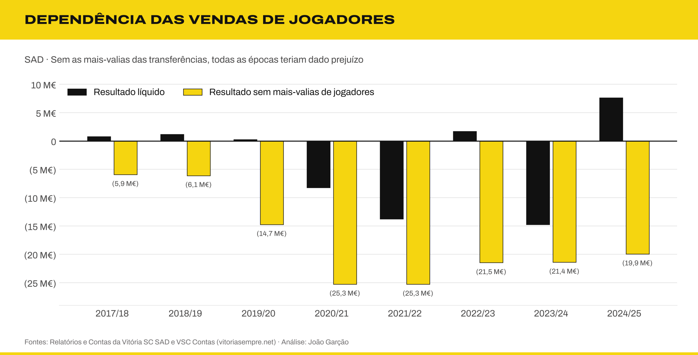
2. Os salários ultrapassaram as receitas durante quatro épocas. Entre 2020/21 e 2023/24, os gastos com pessoal ficaram entre 119% e 200% das vendas e serviços.
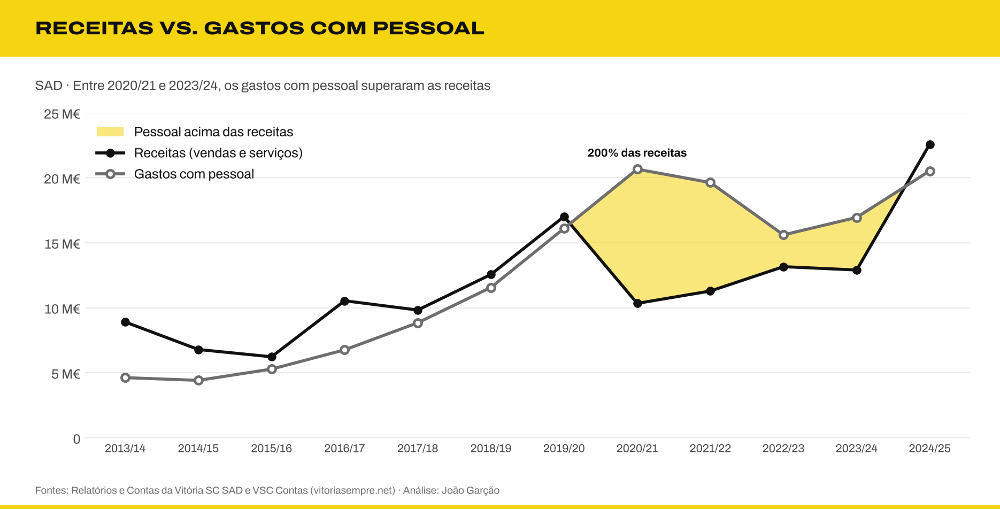
3. A SAD só teve capital próprio positivo em 4 das 14 épocas (2016/17 a 2019/20). Desde 2020/21, o passivo supera o ativo: o capital próprio chegou a (36,8 M€) a 30/06/2026, e o passivo a 85,3 M€. O rácio de endividamento de 2023/24 (1,87) foi o mais alto da história da SAD.
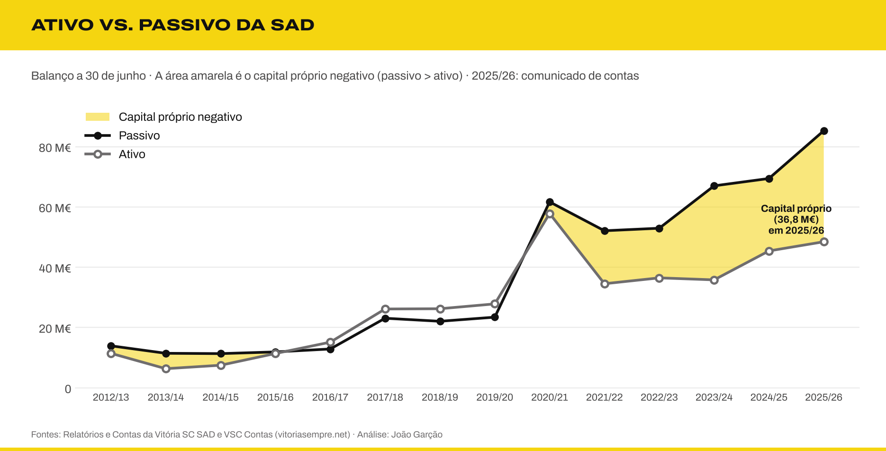
4. A dívida ficou mais cara e mais curta. A dívida financeira passou de 1,2 M€ (2019/20) para 34,6 M€ (2024/25), e os juros de 149 mil € para 5,0 M€, cerca de 34 vezes mais. A taxa de juro implícita subiu de cerca de 6% para 15%, e os juros já pesam 22% das receitas. A 30/06/2025, 92% da dívida financeira vencia em menos de um ano, e a liquidez geral está abaixo de 0,5 desde 2021/22.
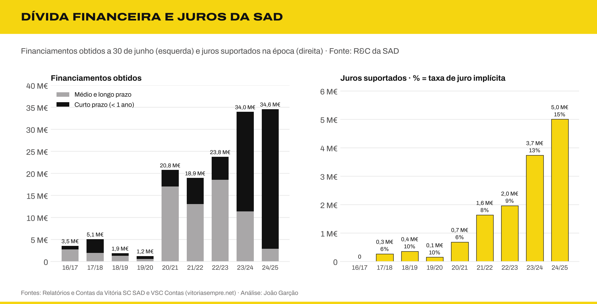
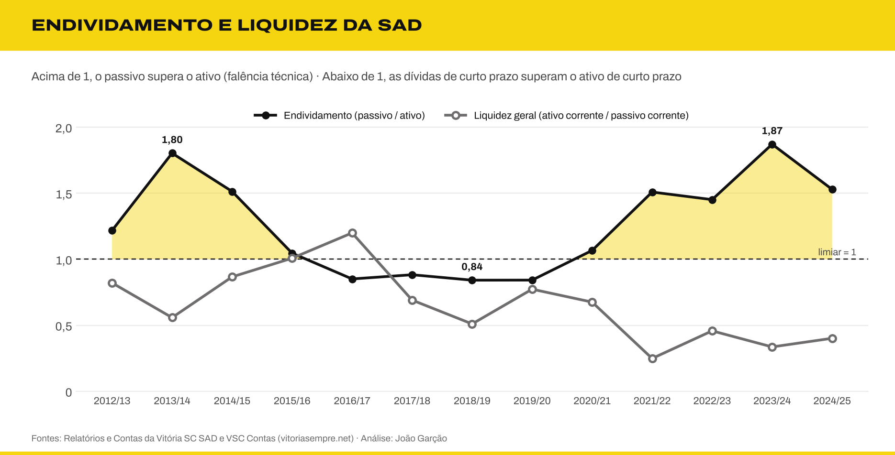
5. Uma época europeia muda tudo. Com fase de grupos UEFA, as receitas operacionais médias foram de 21,3 M€, contra 14,0 M€ nas restantes épocas.
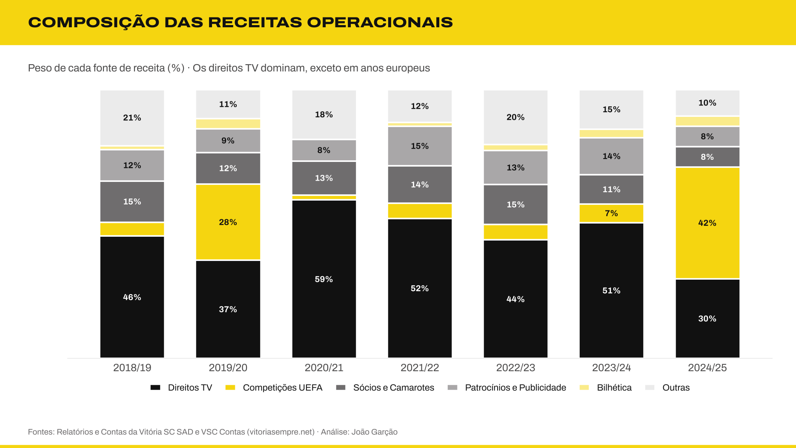
6. Gastar mais não garantiu melhores classificações. Numa regressão linear entre as despesas da SAD (pessoal, FSE e amortizações) e o lugar na Liga, em 12 épocas, cada 10 M€ a mais valem, em média, só 0,6 lugares, e as despesas explicam apenas 9% das diferenças de classificação (R² = 0,09). O intervalo de confiança a 95% do declive inclui o zero: é uma associação fraca, não uma relação de causa e efeito. O 4.º lugar de 2016/17 custou 13,3 M€; o 7.º lugar de 2020/21 custou 32,5 M€.
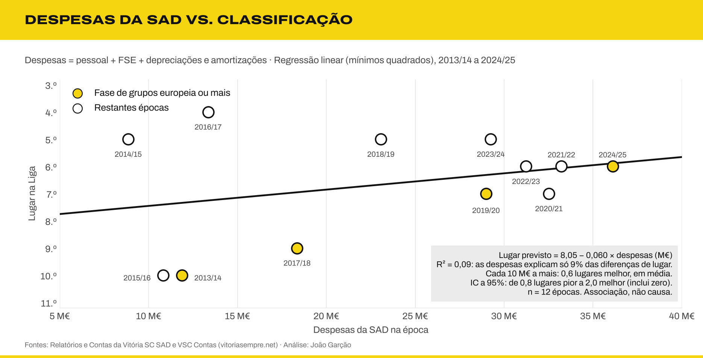
7. A estrutura cresceu mais depressa do que a equipa. A SAD passou de 59 funcionários em 2012/13 para 229 em 2024/25, um recorde. Os jogadores quase duplicaram (42 → 82), mas o restante pessoal (treinadores, staff e apoio) multiplicou-se por mais de 8 (17 → 147). Hoje há 1,8 não-jogadores por cada jogador, contra 0,4 em 2012/13. A remuneração média por jogador subiu de 80 mil € (2016/17) para 134 mil € (2024/25).
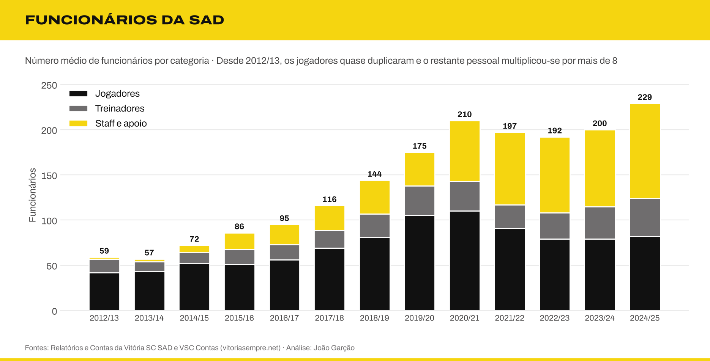
8. O Clube e a SAD têm perfis opostos. O Clube tem pouco passivo e património valioso (Estádio e Academia), mas prejuízos recorrentes, perto de 1 M€ por ano nas duas últimas épocas. A SAD concentra a dívida e a volatilidade.
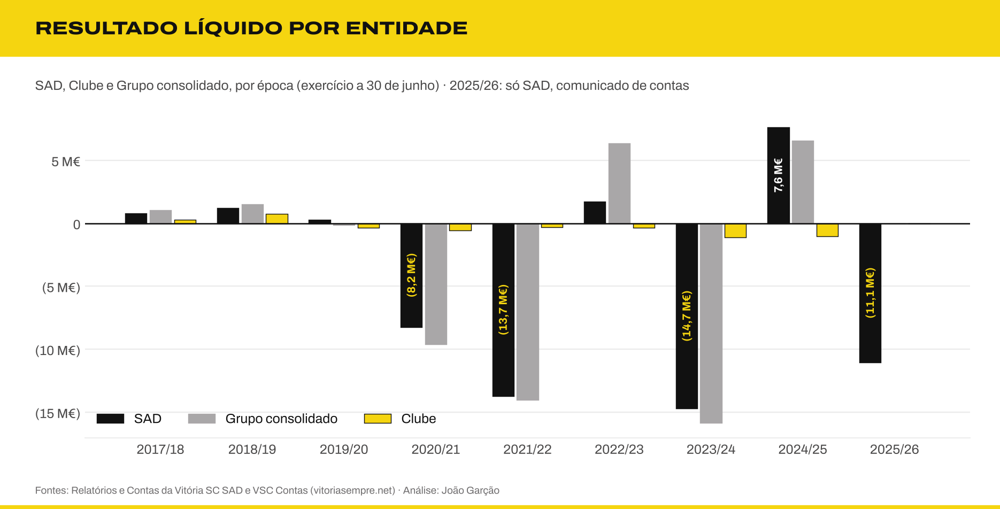
9. O Vitória paga juros muito acima do mercado. Em 2024/25, a taxa implícita da dívida foi de 14,6%, contra 2,6% da Euribor a 12 meses e 3,0% das obrigações do Estado português: um spread de 12 pontos percentuais. Em 2019/20, com juros negativos na zona euro, a SAD pagou 9,6%, 21 vezes a taxa do Estado. À taxa média do crédito às empresas em Portugal, os juros seriam 3,1 a 3,5 M€ mais baixos por ano.
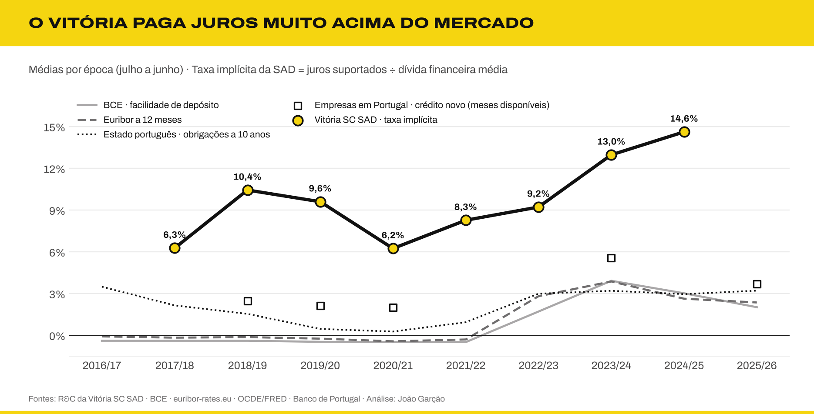
10. A SAD vende sempre mais em jogadores do que fatura na operação. Em todas as épocas desde 2017/18, as vendas brutas de jogadores superaram as receitas de bilheteira, TV, patrocínios e sócios. Em 2024/25 foram 2,19 € de vendas por cada euro de receita, e a média de três épocas subiu de 1,09 € para 1,89 €.
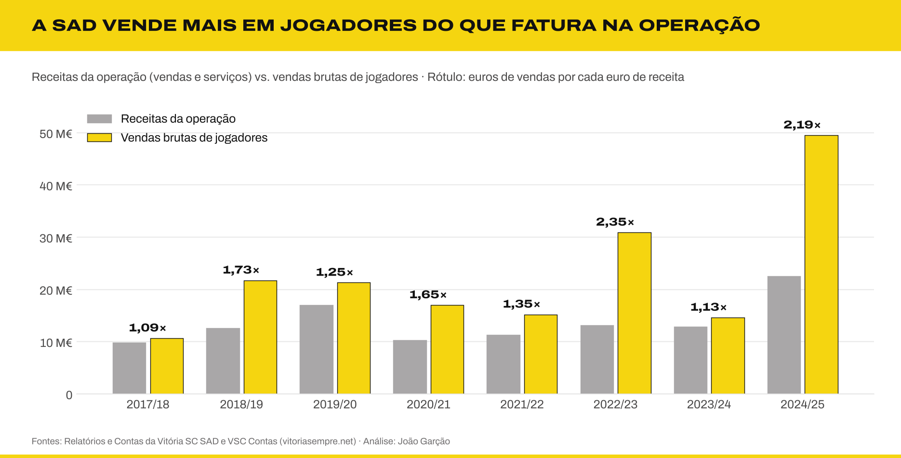
11. A centralização dos direitos TV ajuda muito, mas não equilibra as contas sozinha. O défice antes de vendas foi de 20,9 M€ por época (média 2022/23–2024/25). Num cenário central (contrato de 250 M€, 6.º lugar), a centralização traz mais 4,8 M€, cerca de um quarto do défice. Somada a juros ao nível do mercado, as mais-valias necessárias para o equilíbrio desceriam de cerca de 21 M€ para 13 M€ por época.
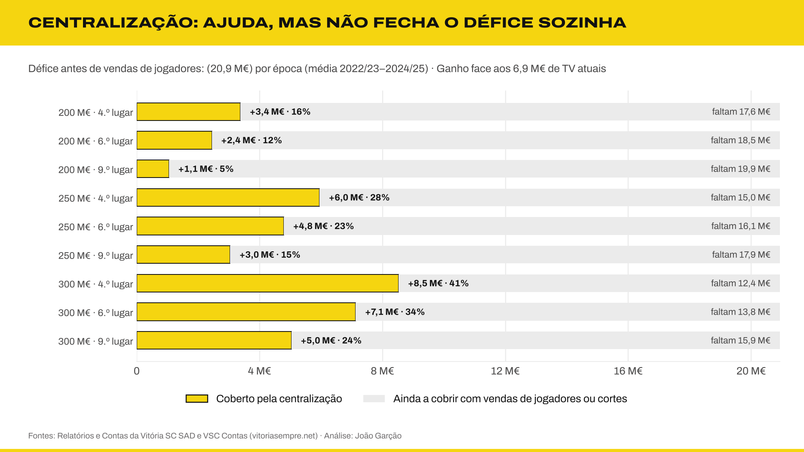
O painel de indicadores junta a margem corrente (negativa em todas as épocas), a rendibilidade do ativo, a dívida face às receitas e o cash flow operacional.
Os resultados completos das 55 consultas estão em resultados.md.
17 conceitos aprofundados: custo amortizado, dívida líquida/EBITDA, fundo de maneio, factoring, passes, reservas ocultas, artigo 35.º do CSC, alavancagem operacional, partes relacionadas, regras da UEFA, multiclube, Lei 39/2023, intermediários, direitos de terceiros, solidariedade, centralização dos direitos TV e eficiência desportiva. Uma terceira parte junta o painel de indicadores, a comparação com as taxas de juro de mercado, a regressão entre despesas e classificação, o peso das vendas e a centralização como via para equilibrar as contas
Média ponderada por dias com LEAD e julianday (taxa do BCE por época)
vista v_taxas_epoca
Regressão linear por mínimos quadrados, R², erro-padrão, intervalo de confiança e resíduos em SQL
consulta 53
Cenários cruzados (VALUES × VALUES)
consulta 55
Como usar
Versão HTML. O ficheiro html/contas-vitoria.html junta o README, as três análises, os gráficos e uma consola SQL que corre a base de dados no browser. Descarrega-o e abre-o num browser (Chrome, Safari, Firefox ou Edge). Funciona sem internet: o SQLite também vai embutido. Só o diagrama do modelo de dados precisa de ligação.
Versão web para editar no VS Code. A pasta site/ tem o mesmo conteúdo em ficheiros separados: index.html, css/style.css e js/app.js, com os gráficos em img/ e as letras em fontes/. Abre a pasta no Visual Studio Code e usa a extensão Live Server (Go Live); as instruções estão em site/LEIA-ME.md.
A base de dados vsc_contas.db já vem incluída e abre diretamente no DB Browser for SQLite, no DBeaver ou em qualquer cliente SQLite.
Requisitos. Python 3.10 ou mais recente (testado com 3.13) e SQLite 3.35 ou mais recente (testado com 3.45, o que vem com o Python). O dialeto é SQLite: as consultas usam CTE recursivas, funções de janela e sqrt(), e foram escritas para correr também no sql.js do browser (por isso não usam ln() nem pow()).
Para reconstruir e validar tudo com um só comando:
pip install -r requirements.txt
python scripts/construir.py # base de dados, consultas, testes, dicionário, gráficos e HTML
python scripts/construir.py --rapido # só base de dados, consultas e testes (sem dependências externas)
O comando pára no primeiro erro. Os passos também podem correr um a um:
python scripts/build_db.py # cria vsc_contas.db (só biblioteca padrão)
python scripts/correr_analises.py # corre as 55 consultas e gera resultados.md
python scripts/testes.py # testes de qualidade e reconciliação → testes.md
python scripts/dicionario.py # dicionário de dados → dicionario-dados.md
python scripts/graficos.py # gera os gráficos em graficos/
python scripts/cabecalhos.py # gera as faixas de título do README
python scripts/gerar_html.py --site # gera html/contas-vitoria.html e a pasta site/
Qualidade e reconciliação.testes.md mostra o resultado dos testes: integridade (chaves e épocas), coerência contabilística (ativo = passivo + capital próprio, subtotais, movimentos do plantel), reconciliação de 17 números citados nos relatórios com a base de dados, e execução das 55 consultas. Os avisos explicam os casos conhecidos (valores repetidos na fonte, diferenças de arredondamento). O dicionário de dados descreve as 30 tabelas e vistas, coluna a coluna, com unidades, sinais e proveniência.
Resolução de problemas
Sintoma
Causa e solução
ModuleNotFoundError: matplotlib ou markdown
Falta instalar as dependências: pip install -r requirements.txt. A base de dados, as consultas e os testes não precisam delas.
no such function: sqrt
SQLite antigo, sem funções matemáticas (anterior a 3.35). Atualiza o Python ou usa a versão HTML.
Os gráficos saem com outra letra
A pasta fontes/ tem de estar ao lado de scripts/.
A consola SQL do site/ não abre
Abre a pasta com o Live Server do VS Code, ou o index.html diretamente num browser recente.
Exemplo: o resultado da SAD com e sem vendas de jogadores.
SELECT epoca_id,
resultado_liquido,
mais_valias_liquidas,
resultado_liquido - mais_valias_liquidas AS rl_sem_mais_valias
FROM v_kpis
WHERE entidade_id = 'SAD' AND mais_valias_liquidas IS NOT NULL
ORDER BY epoca_id;
Estrutura
contas-vitoria-sql/
├── data/ Dados em CSV (um ficheiro por tabela)
├── sql/
│ ├── 01_schema.sql Tabelas, chaves e restrições
│ ├── 02_dimensoes.sql Épocas, entidades e rubricas
│ ├── 03_vistas.sql Vistas reutilizáveis
│ └── 04_analises.sql 55 consultas de análise
├── scripts/
│ ├── construir.py Reconstrói e valida tudo com um comando
│ ├── build_db.py Constrói vsc_contas.db
│ ├── correr_analises.py Gera resultados.md
│ ├── testes.py Testes de qualidade e reconciliação → testes.md
│ ├── dicionario.py Gera dicionario-dados.md
│ ├── graficos.py Gera os gráficos
│ ├── cabecalhos.py Gera as faixas de título do README
│ ├── gerar_html.py Gera a versão HTML
│ ├── modelo.html Modelo da versão HTML
│ └── vendor/ sql.js (SQLite em WebAssembly, licença MIT)
├── graficos/ Gráficos PNG (e cabecalhos/ com as faixas)
├── html/ Versão HTML autónoma, com consola SQL
├── site/ Versão web em HTML, CSS e JavaScript separados
├── fontes/ Archivo e Archivo Expanded (licença OFL)
├── resultados.md Resultados das consultas
├── testes.md Relatório dos testes
├── dicionario-dados.md Tabelas, colunas, unidades e proveniência
├── analise-estrategica.md Diagnóstico e recomendações
├── analise-tecnica.md 17 conceitos, indicadores, juros e cenários
├── verificacao-fontes.md Conferência com os Relatórios e Contas
└── vsc_contas.db Base de dados pronta a usar
Fontes e limitações
Os dados financeiros vêm de duas fontes:
Relatórios e Contas da Vitória SC – Futebol, SAD de 2012/13 a 2024/25 (vitoriasc.pt/documentos): balanço, dívida financeira, juros, número de funcionários e gastos com pessoal da SAD, verificados documento a documento (ver verificação das fontes).
VSC Contas, um dashboard não oficial: demonstração de resultados detalhada, composição das receitas, transferências, Clube e consolidado. Os balanços da SAD de 2014/15 a 2016/17 publicados no site estavam errados e foram substituídos pelos dos R&C.
As consultas de qualidade (17 a 19) revelam limitações que convém conhecer:
Cobertura desigual. A SAD tem a demonstração de resultados completa em quase todas as épocas. O Clube só tem dados detalhados a partir de 2021/22. O consolidado começa em 2017/18.
Valores repetidos. Os direitos TV têm exatamente 6 922 619 € em quatro épocas seguidas, e "Outros" repete-se em 2023/24 e 2024/25. Provavelmente são valores de preenchimento e não dados reais.
Números diferentes para a mesma coisa. As mais-valias da página da SAD diferem das da página consolidada em cinco épocas. As duas versões estão guardadas, cada uma com a entidade de origem.
Composição das receitas. Os totais coincidem com os rendimentos operacionais consolidados, por isso foram associados ao Grupo.
Rácio de custos do plantel. A consulta 45 segue a fórmula da UEFA, mas sem as comissões de agentes (não há dados separados), por isso subestima o rácio.
Simulações. A centralização dos direitos TV (consulta 48) usa um mérito linear e ignora as audiências; o valor de mercado do plantel (Transfermarkt) só existe para 2026; os treinadores vêm da Wikipédia. São ordens de grandeza, não previsões.
Contas reexpressas e 2025/26. A SAD reexpressou os valores de 2024/25 nas contas de 2025/26 (resultado de 7,4 M€ em vez de 7,6 M€). Esta base usa os valores originalmente publicados para 2024/25; os valores reexpressos estão na tabela reexpressao (consulta 36). Para 2025/26 só existem os indicadores resumidos do comunicado de contas, cujas rubricas não coincidem todas com as dos anos anteriores.
Dados desportivos. Classificações e campanhas europeias recolhidas da Wikipédia e do Maisfutebol; pontos só disponíveis para as três últimas épocas. As médias de espectadores vêm da compilação do autor.
Juros. A tabela balanco_sad_rc guarda os juros suportados brutos, tal como nos R&C. A rubrica "juros" da demonstração de resultados (origem: VSC Contas) é, nalgumas épocas, líquida dos juros obtidos. A taxa de juro implícita inclui encargos de factoring e de antecipação de receitas, por isso fica acima da taxa nominal dos empréstimos.
Taxas de referência. BCE (taxas diretoras), euribor-rates.eu (Euribor a 12 meses, primeiro dia útil de cada mês), OCDE via FRED (obrigações do Estado português a 10 anos) e Banco de Portugal (crédito novo a empresas, só os meses que foi possível recolher). A taxa implícita do Vitória não é diretamente comparável a uma taxa nominal, porque inclui comissões de factoring e antecipação.
Funcionários. São números médios anuais. Em 2012/13 são os funcionários transferidos para a SAD em abril de 2013 (época parcial). A categoria "pessoal de apoio ao futebol profissional" só existe desde 2021/22.
Identidade visual
Os gráficos seguem a paleta dos documentos financeiros do clube: amarelo #F5D510, preto #111111 e cinzentos #6F6D6E e #EBEBEB. Os valores negativos aparecem entre parênteses. Como o Markdown do GitHub não permite escolher tipos de letra, os títulos das secções deste README são imagens geradas por scripts/cabecalhos.py. A tipografia é a Archivo, da Omnibus-Type: Archivo Expanded nos títulos e Archivo no texto. Os ficheiros estão na pasta fontes/ (SIL Open Font License), para que os gráficos saiam iguais em qualquer computador.
Projeto de João Garção · Mestrado em Humanidades Digitais, Universidade do Minho
Análise estratégica: finanças, desporto e enquadramento económico
Como pode o Vitória SC melhorar a sua prestação financeira?
Análise independente de João Garção, baseada nos dados deste projeto (consultas 20 a 26 em resultados.md) e em fontes públicas citadas no fim. As recomendações são opinião do autor. Não têm ligação ao clube nem a qualquer candidatura ou órgão social. Os conceitos técnicos (dívida líquida/EBITDA, factoring, artigo 35.º, regras da UEFA, centralização…) são aprofundados na análise técnica.
Sumário executivo
O problema é estrutural, não conjuntural. Em 2025/26 a SAD gastou 33,1 M€ em custos operacionais para 15,1 M€ de rendimentos operacionais: um resultado operacional de (18,0 M€) antes de vender jogadores. Sem as depreciações, o EBITDA sem operações com jogadores foi de (17,2 M€).
As vendas de jogadores tapam o buraco, mas não chegam. Para fechar 2025/26 sem prejuízo, a SAD precisava de ganhar 23,7 M€ líquidos com jogadores num só ano. Só esteve perto disso uma vez (2024/25, com o recorde de 49,5 M€ em vendas brutas).
A Europa é a variável que mais mexe nas contas. A diferença entre 2024/25 e 2025/26 explica-se quase toda pelas receitas UEFA: 9,4 M€ contra 1,2 M€. O resultado passou de +7,4 M€ para (11,1 M€).
Gastar mais em salários não comprou classificações. A correlação entre gastos com pessoal e lugar na Liga é fraca (−0,3). As duas épocas mais caras (2020/21 e 2024/25) acabaram em 7.º e 6.º lugar. O 4.º lugar de 2016/17 custou um terço disso.
A dívida é cara e de curto prazo. A taxa de juro implícita subiu de cerca de 6% para 15% e os juros já pesam 22% das receitas. 92% da dívida financeira vencia a menos de um ano (30/06/2025). O capital próprio da SAD chegou a (36,8 M€). O auditor sinaliza incerteza material sobre a continuidade.
A estrutura cresceu mais depressa do que a equipa. De 59 funcionários (2012/13) para 229 (2024/25). Os jogadores quase duplicaram, mas o restante pessoal multiplicou-se por mais de 8.
Nenhuma medida isolada resolve. Só a combinação de corte de custos, refinanciamento, receitas comerciais e uma política de vendas planeada torna o modelo sustentável. A Europa deve ser tratada como um bónus, não como base do orçamento.
1. Diagnóstico: um modelo de negócio deficitário por natureza
A SAD tem duas "contas" diferentes dentro das suas contas:
Componente (2025/26)
Valor
Rendimentos operacionais (sem jogadores)
15,10 M€
Gastos operacionais (sem jogadores, incluindo depreciações)
(33,10 M€)
Resultado operacional sem operações com jogadores
(18,00 M€)
Resultado com direitos de atletas
12,59 M€
Resultados financeiros
(5,60 M€)
Imposto sobre o rendimento
(0,05 M€)
Resultado líquido
(11,06 M€)
Para referência: EBITDA sem operações com jogadores (comunicado)
(17,21 M€)
Fonte: comunicado de contas da SAD a 30/06/2026. As linhas somam o resultado líquido: 15,10 − 33,10 + 12,59 − 5,60 − 0,05 = −11,06. O EBITDA publicado exclui as depreciações e amortizações de ativos que não são passes de jogadores, que estão incluídas nos 33,10 M€ de gastos. A diferença, de cerca de 0,79 M€, é deduzida (o comunicado não a discrimina). O teste rec_2025_26 em scripts/testes.py verifica esta soma.
Isto quer dizer que a atividade normal do clube (jogar futebol, vender bilhetes, televisão, patrocínios) dá prejuízo todos os anos. A diferença tem de vir da venda de jogadores. É o modelo de "clube vendedor", comum em Portugal, mas com uma margem de segurança muito pequena:
Nas oito épocas com dados, o resultado sem mais-valias foi sempre negativo, entre (5,9 M€) e (25,3 M€) (consulta 2).
Os gastos com pessoal ficaram acima das receitas de 2020/21 a 2023/24, num máximo de 200% (consulta 3).
O passivo da SAD passou de 23,5 M€ em 2019/20 para 85,3 M€ em 2025/26.
2. Finanças vs. desempenho desportivo
2.1 A Europa paga as contas, mas só quando se chega à fase de grupos
Tipo de época (SAD)
Épocas
Receita média
Resultado médio
Fase de grupos ou mais
2013/14, 2017/18, 2019/20, 2024/25
14,6 M€
1,5 M€
Só pré-eliminatórias
2015/16, 2022/23, 2023/24
10,8 M€
(4,2 M€)
Sem Europa
2014/15, 2016/17, 2018/19, 2020/21, 2021/22
10,3 M€
(3,3 M€)
Consulta 21. 2025/26 fica de fora porque os dados disponíveis não separam as vendas e serviços.
Cair nas pré-eliminatórias não melhora as contas: os custos sobem (viagens, prémios, plantel mais largo) e as receitas ficam iguais às de uma época sem Europa. O salto só acontece na fase de grupos ou de liga. Em 2024/25, com a Liga Conferência, as receitas de competições (UEFA e nacionais) chegaram a 9,7 M€, 42% das receitas operacionais.
Implicação: orçamentar a contar com a Europa é arriscado, porque o acesso depende de pré-eliminatórias de resultado incerto. 2023/24 é o exemplo: eliminação na 2.ª pré-eliminatória e prejuízo de (14,7 M€).
2.2 Mais salários não trouxeram melhores classificações
Correlação de −0,3 entre gastos com pessoal e lugar na Liga (consulta 22). Há uma ligeira tendência, mas fraca.
O 4.º lugar de 2016/17 custou 6,8 M€ em pessoal. O 7.º lugar de 2020/21 custou 20,7 M€.
Entre 2018/19 e 2024/25, o gasto com pessoal quase duplicou (11,6 → 20,5 M€) e o Vitória ficou sempre entre o 5.º e o 7.º lugar.
Em 2025/26, o clube ganhou a Taça da Liga mas acabou a Liga em 9.º, com 42 pontos, e falhou a Europa.
Implicação: o problema não é só quanto se gasta, mas como se gasta. Contratar caro, ter muitos jogadores emprestados e com cláusulas, e trocar de treinador a meio da época (três treinadores em 2024/25) reduz a eficiência de cada euro.
2.3 Vender é necessário, mas está a render menos do que podia
Em 2024/25, de 49,5 M€ em vendas brutas, ficaram no clube 27,5 M€ (56%). 17,3 M€ foram para intermediários, terceiros e mecanismo de solidariedade (consulta 12).
A SAD devia 21,2 M€ a intermediários a 30/06/2025, três vezes mais do que a clubes vendedores.
O Presidente reconheceu no R&C 2024/25 a "obrigação de vender importantes ativos em janeiro". Vender por necessidade de tesouraria baixa o preço.
2.4 A estrutura cresceu mais depressa do que a equipa
Época
Funcionários
Jogadores
Não-jogadores por jogador
Remuneração média por jogador
Lugar
2016/17
95
56
0,7
80 446 €
4.º
2019/20
175
105
0,7
99 740 €
7.º
2020/21
210
110
0,9
126 015 €
7.º
2024/25
229
82
1,8
134 494 €
6.º
Consultas 31 a 33. Nº médio de funcionários e gastos com pessoal das notas "Benefícios dos empregados" dos R&C.
O pico de jogadores (110 em 2020/21) coincidiu com o pico de gastos com pessoal e com o pior período financeiro. Desde então, o plantel encolheu para 79–82 jogadores, mas o restante pessoal continuou a crescer: de 100 para 147 pessoas.
Parte deste crescimento é investimento com retorno esperado (departamentos médico, de nutrição e de performance, reorganizados em 2023/24, segundo o R&C). Mas uma estrutura de 147 não-jogadores é um custo fixo que não desce quando a Europa falha.
A remuneração média por jogador subiu 67% entre 2016/17 e 2024/25, sem melhoria na classificação média.
3. Enquadramento de política económica e desportiva
3.1 Regras financeiras da UEFA
Desde 2025/26, a UEFA limita os custos com o plantel a 70% das receitas (salários, transferências e comissões) para os clubes nas suas provas. A regra substitui o antigo fair play financeiro. Os pagamentos em atraso a clubes, trabalhadores e Estado são verificados três vezes por época.
Época
Rácio aproximado (com vendas)
Sem vendas
2021/22
113%
229%
2022/23
60%
166%
2023/24
97%
147%
2024/25
43%
96%
Consulta 24. Aproximação: (salários de atletas e treinadores + amortizações) / (receitas + mais-valias). A UEFA usa definições próprias.
O Vitória só cumpre o limite nos anos em que vende muito. Uma época europeia sem grandes vendas pode deixá-lo acima dos 70%, com sanções progressivas.
A UEFA também condiciona a propriedade multiclube. Em 2023, a ligação da V Sports ao Aston Villa obrigou a reduzir a sua participação na SAD de 46% para 29% e a substituir um empréstimo de 11,4 M€ a juro zero por dívida a 11% fixos (BDT & MSD). Uma regra desportiva teve assim um custo financeiro direto: 11% sobre 11,4 M€ são cerca de 1,25 M€ de juros por ano.
3.2 Centralização dos direitos televisivos (2028/29)
A partir de 2028/29, os direitos de TV da Liga passam a ser vendidos em conjunto. Pela proposta em discussão, 90% do valor vai para a I Liga e é repartido assim:
Com um contrato de 250 M€, a parte igual seria de cerca de 4,2 M€ por clube, 60% do que o Vitória recebe hoje (6,9 M€) (consulta 26). O resto depende de ficar bem classificado e encher o estádio.
Implicação: com a centralização, a classificação e a assistência passam a ter um valor em euros direto e previsível. Uma época no meio da tabela (como 2025/26) passa a custar dinheiro, e o arranque de 2026/27 em 15.º lugar após 8 jornadas mostra o risco. Por outro lado, o Vitória tem uma das maiores assistências fora dos três grandes (17 388 de média em 2023/24), o que é um trunfo neste modelo.
3.3 Custo do dinheiro e fiscalidade
Época
Dívida financeira
Juros suportados
Taxa implícita
Juros / receitas
Liquidez geral
2019/20
1,2 M€
0,1 M€
10%
1%
0,77
2020/21
20,8 M€
0,7 M€
6%
7%
0,68
2022/23
23,8 M€
2,0 M€
9%
15%
0,46
2023/24
34,0 M€
3,7 M€
13%
29%
0,34
2024/25
34,6 M€
5,0 M€
15%
22%
0,40
Consultas 27 a 29, com dados dos R&C. A taxa implícita (juros ÷ dívida média do ano) inclui encargos de factoring e de antecipação de receitas.
Juros: o principal empréstimo (26,3 M€) paga 11% fixos, cerca de 2,9 M€ por ano, num período em que o BCE desceu as taxas de referência a partir de 2024. Somando factoring e antecipação de receitas de vendas, o custo efetivo chega aos 15%. O R&C atribui a subida "essencialmente" à antecipação de receitas e aos empréstimos da Apollo e da MSD. Os resultados financeiros totais chegaram a (5,6 M€) em 2025/26.
Liquidez: desde 2021/22, o ativo corrente cobre menos de metade do passivo corrente (liquidez geral entre 0,25 e 0,46). A 30/06/2024, a caixa cobria 0,15% das dívidas de curto prazo.
Cobertura: o EBITDA foi negativo em 2020/21, 2021/22 e 2023/24, ou seja, a operação nem sequer pagou os juros. Em 2024/25 cobriu-os 3,7 vezes, mas só graças às vendas de jogadores (consulta 30).
Fisco: quatro passes de jogadores estavam penhorados à Autoridade Tributária, há 855 mil € de reembolso de IVA por receber e processos de 2014–2016 ainda abertos (provisão de 1,5 M€).
3.4 Comparação: o SC Braga
Em 2024/25, a SAD do SC Braga também teve prejuízo, (11,0 M€). A diferença está no balanço: capital próprio positivo de 69 M€ e autonomia financeira de 41%, contra (36,8 M€) na SAD do Vitória um ano depois. Um prejuízo pontual é gerível com um balanço sólido. Com capital próprio negativo, cada prejuízo aumenta diretamente a dívida.
4. Recomendações
Curto prazo (0–12 meses): estancar
Orçamentar sem Europa. As receitas UEFA entram como prémio e destinam-se a reduzir dívida ou reforçar a caixa, nunca a pagar salários fixos.
Refinanciar a dívida de curto prazo. Trocar os 26,3 M€ a 11% por dívida de médio/longo prazo. Cada ponto percentual a menos poupa cerca de 0,26 M€ por ano. A 6%, a poupança seria de 1,3 M€ por ano. O Conselho Fiscal já recomendou substituir dívida de curto prazo por médio e longo prazo.
Reserva mínima de caixa. A SAD chegou a ter 78 mil € em caixa (30/06/2024) e 505 mil € a 30/06/2026. Uma reserva protegida evita vendas forçadas em janeiro.
Resolver as pendências fiscais. Recuperar o IVA, negociar os processos antigos e libertar os passes penhorados, para recuperar liquidez e liberdade na gestão do plantel.
Médio prazo (1–3 anos): ajustar o modelo
Teto para os custos do plantel e revisão da estrutura. Reduzir os gastos com pessoal para um máximo de 100% das receitas recorrentes em dois anos e 85% em quatro, e cumprir os 70% da UEFA sem depender de vendas. Isto inclui rever os 147 postos não-jogadores, mantendo os que provam retorno (performance, scouting, formação).
Plantel mais curto e menos dependente de terceiros. Menos jogadores emprestados e em co-propriedade, mais jogadores 100% do clube. Se as mais-valias tivessem sido 70% das vendas brutas, e não 56%, a SAD teria ganho mais 7,1 M€ em 2024/25 (menos comissões e menos percentagens cedidas a terceiros).
Vender no momento certo. Um calendário de vendas planeado (no verão, com 2–3 ativos preparados por época) em vez de vendas de emergência a meio da época.
Estabilidade técnica. Um modelo de jogo e um perfil de treinador definidos pela estrutura, para que as contratações sirvam o projeto e não cada treinador.
Receitas comerciais e de dia de jogo. Bilhética, sócios e camarotes renderam cerca de 9 € por espectador e jogo em 2024/25 (aproximação). Há margem em hospitality, eventos no estádio, merchandising e patrocínios, sobretudo a pensar no critério de assistências da centralização.
Longo prazo (3+ anos): reconstruir o balanço
Recapitalizar a SAD. A entrada prevista de 3,8 M€ no acordo com a V Sports cobre cerca de 10% do capital próprio negativo. É preciso um plano de capital mais amplo: conversão de dívida em capital, novos investidores (dentro das regras multiclube da UEFA) ou outras soluções, como o empréstimo obrigacionista proposto numa das candidaturas de 2026. Cada opção tem custos de controlo e de juros que os sócios devem avaliar.
Formação como fonte de valor. Jogadores formados no clube têm custo de aquisição zero e ficam 100% do clube na venda, o que melhora a retenção e o rácio da UEFA. Os minutos jogados por atletas que passaram pela formação caíram de cerca de 29 mil (2015/16) para 13 mil (2024/25), segundo a compilação do autor.
Preparar a centralização. Com mérito e audiências a valer mais de 60% da distribuição, a estabilidade no top 6 e o estádio cheio tornam-se objetivos financeiros, não só desportivos.
5. Cenários: quanto é preciso ganhar com jogadores?
Partindo de 2025/26, quanto teria de render a venda de jogadores (resultado com direitos de atletas) para a SAD fechar o ano sem prejuízo?
B + fase de liga europeia (+8,3 M€ de receitas UEFA, ~2 M€ de custos extra)
9,6 M€ / ano
Cálculo ilustrativo do autor sobre os valores do comunicado de contas de 2025/26 (consulta 25).
Para comparação: o resultado com jogadores foi de 12,6 M€ em 2025/26 e de 22,9 M€ em 2024/25 (reexpresso). As mais-valias médias da SAD entre 2017/18 e 2024/25 foram de 14,4 M€.
Leitura: com a estrutura atual (A), é preciso uma época recorde de vendas todos os anos, o que não é realista. O plano de ajustamento (B) aproxima o alvo da média histórica. Só com ajustamento e Europa (C) o clube fica com margem para não vender por necessidade.
Análise técnica: conceitos financeiros e política desportiva
Este documento aprofunda 17 conceitos, nove de análise financeira e oito de política e regulação desportiva, e junta uma terceira parte com indicadores, juros e cenários: painel de rácios, comparação com as taxas de juro de mercado, regressão entre despesas e classificação, peso das vendas de jogadores e o efeito da centralização no equilíbrio das contas. Para cada um, explica o que significa e o que os números mostram no caso do Vitória SC – Futebol, SAD. Indica também que consulta SQL o calcula (ver resultados.md).
Os valores do balanço, da dívida, dos passes e do pessoal vêm dos Relatórios e Contas (R&C) de 2012/13 a 2024/25, verificados documento a documento (verificação das fontes). A interpretação é do autor. Valores negativos entre parênteses.
O conceito. Quando um jogador é vendido a prestações (por exemplo, 10 M€ pagos em três anos), esse valor a receber vale menos hoje do que 10 M€. Pelo método do custo amortizado (NCRF 27), o crédito é registado pelo seu valor atual, descontado a uma taxa de juro. A diferença é reconhecida como rendimento financeiro ao longo do tempo. Corrigir um erro de anos anteriores obriga a reexpressar os comparativos (NCRF 4).
No Vitória. Nas contas de 2025/26, a SAD reexpressou 2024/25 por não ter aplicado o custo amortizado às vendas a prestações, entre outras correções (consulta 36):
Indicador 2024/25
Original
Reexpresso
Diferença
Resultado líquido
7,61 M€
7,36 M€
(0,25 M€)
Clientes
19,06 M€
17,60 M€
(1,46 M€)
Ativo total
45,43 M€
43,07 M€
(2,36 M€)
Capital próprio
(24,03 M€)
(25,77 M€)
(1,74 M€)
Em 2025/26, a demonstração de resultados já mostra uma linha própria de "custo amortizado" de (3,0 M€), que reduz o resultado com direitos de atletas.
Leitura. O "recorde" de 2024/25 foi ligeiramente inferior ao anunciado. Mais importante: uma venda a prestações vale menos do que o preço anunciado, e antecipá-la junto de um banco também tem custo (ver ponto 4).
2. Dívida líquida / EBITDA
O conceito. Quantos anos de EBITDA seriam precisos para pagar a dívida financeira líquida (empréstimos − caixa). Os bancos costumam considerar elevado um valor acima de 3×.
No Vitória (consulta 37):
Época
Dívida líquida
EBITDA
Dívida líq. / EBITDA
EBITDA sem vendas de jogadores
2019/20
(2,7 M€)
6,4 M€
caixa líquida
—
2021/22
18,9 M€
(4,2 M€)
sem leitura
(15,6 M€)
2022/23
23,6 M€
11,8 M€
2,0×
(10,2 M€)
2023/24
33,9 M€
(6,3 M€)
sem leitura
(12,9 M€)
2024/25
31,8 M€
18,7 M€
1,7×
(8,9 M€)
Leitura. Nos anos bons, o rácio parece confortável (1,7×), mas só porque o EBITDA inclui as vendas de jogadores. Sem elas, o EBITDA é sempre negativo e o rácio deixa de ter leitura: a operação, por si só, não gera dinheiro para pagar dívida.
3. Fundo de maneio e prazos médios
O conceito. O fundo de maneio (ativo corrente − passivo corrente) mostra se os recursos de curto prazo cobrem as obrigações de curto prazo. Os prazos médios dizem quanto tempo a empresa demora a receber dos clientes (PMR) e a pagar aos fornecedores (PMP).
No Vitória (consulta 38):
Época
Fundo de maneio
Clientes
PMR
PMP
Outras contas a pagar
2019/20
(3,9 M€)
4,6 M€
43 dias
73 dias
17,6 M€
2021/22
(27,2 M€)
7,6 M€
104 dias
162 dias
21,4 M€
2023/24
(34,9 M€)
14,5 M€
192 dias
178 dias
24,7 M€
2024/25
(35,4 M€)
19,1 M€
96 dias
71 dias
28,9 M€
PMR: clientes em dias de receitas mais vendas brutas de passes. PMP: fornecedores em dias de FSE e mercadorias.
Leitura. O fundo de maneio negativo passou de 4 M€ para 35 M€ em cinco anos. A rubrica "outras contas a pagar" (29 M€, 42% do passivo) inclui 21,2 M€ a intermediários e 4,7 M€ a clubes. O auditor refere em 2024/25 "dívidas em mora a credores". Os clientes cresceram com as vendas a prestações: o dinheiro das transferências entra devagar, mas as comissões e salários pagam-se já.
4. Factoring e antecipação de receitas
O conceito. O factoring é a venda de um crédito a um banco para receber o dinheiro já, com desconto. Sem recurso, o risco passa para o banco e o crédito sai do balanço. Com recurso, o clube continua responsável se o comprador não pagar, por isso a operação fica registada como empréstimo.
No Vitória (consulta 39):
Instrumento
30/06/2024
30/06/2025
Empréstimos (BDT & MSD, 11% fixos)
17,6 M€ (52%)
26,3 M€ (76%)
Factoring
9,1 M€ (27%)
5,7 M€ (16%)
Apollo (garantia: direitos TV)
7,2 M€ (21%)
2,5 M€ (7%)
Segundo o relatório de gestão de 2024/25, algumas operações foram feitas com recurso, o que levou a registar 14,8 M€ de empréstimos ligados a valores a receber de clientes. O mesmo relatório atribui a subida dos juros "sobretudo" aos juros das operações de antecipação de recebíveis. Os direitos TV também foram antecipados e estiveram consignados ao empréstimo da Apollo até janeiro de 2026.
Leitura. Antecipar receitas resolve a tesouraria de hoje à custa dos resultados de amanhã. É uma das razões para a taxa de juro implícita ter chegado aos 15% (consulta 27).
5. Amortização de passes e abates
O conceito. O custo de contratar um jogador (transferência, comissões, formação) é um ativo intangível, amortizado em partes iguais durante o contrato. Se o contrato for rescindido antes do fim, o valor por amortizar é abatido de uma só vez.
No Vitória (consulta 40):
Época
Aquisições
Amortizações
Valor do plantel no balanço
2017/18
13,4 M€
3,7 M€
12,2 M€
2020/21
20,2 M€
6,2 M€
22,9 M€
2022/23
6,3 M€
7,6 M€
13,2 M€
2023/24
3,8 M€
4,0 M€
8,7 M€
2024/25
9,4 M€
4,8 M€
10,4 M€
Leitura. O pico de 2020/21 corresponde ao negócio com o FC Porto (dois jogadores por 15 M€). As amortizações desse negócio pesaram nos resultados durante cinco épocas, com 2,2 M€ ainda em 2024/25 e outros tantos previstos para 2025/26. Uma compra cara compromete os resultados de vários anos seguintes.
6. Valor contabilístico vs. valor de mercado do plantel
O conceito. Pelas normas contabilísticas, um jogador vale no balanço o seu custo menos amortizações. Um jogador formado no clube vale zero, por mais que valha no mercado. A diferença entre o valor contabilístico e o valor de mercado é uma reserva oculta.
No Vitória (consulta 41):
Em 2024/25, os jogadores vendidos valiam 2,8 M€ no balanço e foram vendidos por 49,5 M€, 17 vezes mais.
O plantel inteiro valia 10,4 M€ no balanço a 30/06/2025. Segundo o Transfermarkt (citado pela A Bola), o seu valor de mercado era de 59,7 M€ em junho de 2026, contra 26,6 M€ em janeiro desse ano.
Leitura. O capital próprio negativo subestima a situação económica real: o plantel vale várias vezes o seu valor contabilístico. Mas esse valor só existe quando é vendido, e vende-se melhor quando não há pressa (ver pontos 3 e 4).
7. Artigo 35.º do CSC e continuidade
O conceito. O artigo 35.º do Código das Sociedades Comerciais obriga a administração a informar os acionistas e a propor medidas quando se perde metade do capital social. A SAD tem 4,5 M€ de capital, por isso o limiar é um capital próprio de 2,25 M€. Quando há dúvidas sobre a capacidade de a empresa continuar a operar, o auditor inclui no parecer uma incerteza material sobre a continuidade.
No Vitória (consulta 43):
Situação
Épocas
Metade do capital perdida
10 de 13: todas exceto 2016/17 a 2019/20
Ênfase do auditor (artigo 35.º)
2012/13, 2014/15, 2015/16
Incerteza material sobre a continuidade
2021/22, 2022/23, 2023/24, 2024/25
A certificação legal de 2017/18 a 2020/21 não está incluída nos documentos analisados.
Leitura. O auditor mantém a opinião sem reservas, mas há quatro anos seguidos que avisa que a continuidade depende "de instituições financeiras e outras entidades financiadoras", e das vendas de jogadores. O artigo 35.º não obriga a fechar a empresa, mas obriga a um plano. Em 2024/25 a administração propôs aos acionistas repor o capital próprio em pelo menos 2/3 do capital social.
8. Alavancagem operacional
O conceito. Uma empresa com muitos custos fixos tem alta alavancagem operacional: quando as receitas caem, o resultado cai muito mais do que proporcionalmente.
No Vitória (consulta 42):
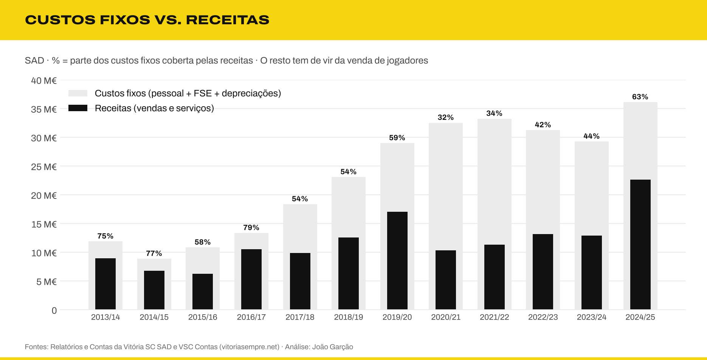
As receitas cobriam 79% dos custos fixos (pessoal, FSE e depreciações) em 2016/17, 32% em 2020/21 e 63% em 2024/25, este último já com a Europa.
O défice antes das vendas de jogadores foi de 13,5 M€ em 2024/25 e chegou a 22,2 M€ em 2020/21.
Leitura. É isto que explica a queda de +7,4 M€ para (11,1 M€) entre 2024/25 e 2025/26. Os custos mantiveram-se (33,1 M€ de gastos operacionais) e as receitas UEFA desapareceram. Com custos fixos tão altos, uma época sem Europa passa logo para prejuízo.
9. Partes relacionadas: Clube ↔ SAD
O conceito. Transações entre entidades do mesmo grupo têm de ser divulgadas, porque podem não ser feitas a preços de mercado.
No Vitória (consulta 44):
Época
SAD cobra quotas e lugares anuais
Rendas pagas ao Clube
Cedência de pessoal do Clube
Clube deve à SAD (30/06)
2020/21
0,79 M€
0,26 M€
0,66 M€
1,30 M€
2022/23
1,20 M€
0,36 M€
0,78 M€
0,44 M€
2024/25
1,55 M€
0,36 M€
0,82 M€
1,85 M€
Leitura. A SAD cobra as quotas e os lugares anuais dos sócios. Paga ao Clube a renda do estádio e da academia (que subiu de cerca de 10 mil € para 30 mil € por mês em dezembro de 2020) e o pessoal cedido. O saldo que o Clube deve à SAD quadruplicou desde 2022/23. A 30/06/2023, a SAD tinha ainda 11,4 M€ de empréstimo da V Sports (ver ponto 11).
Parte II · Política desportiva e regulação
10. Regras financeiras da UEFA
O conceito. O regulamento de sustentabilidade financeira da UEFA (2022) tem três pilares:
- Solvência: não ter dívidas em atraso a clubes, trabalhadores e Estado.
- Estabilidade:football earnings rule, que tolera perdas até um limite.
- Controlo de custos: o rácio de custos do plantel.
O rácio é calculado assim:
- Numerador: salários de jogadores e treinador principal + amortizações de passes + comissões de agentes.
- Denominador: receitas + média de três anos do resultado com vendas de jogadores.
O limite é de 70% desde 2025/26 (foi 90% em 2023/24 e 80% em 2024/25), e as multas são proporcionais ao excesso.
No Vitória (consulta 45):
Época
Com vendas (média 3 anos)
Sem vendas
2020/21
92%
210%
2021/22
82%
189%
2023/24
57%
119%
2024/25
45%
83%
Aproximação: não inclui comissões de agentes (sem dados separados), por isso subestima o rácio.
Leitura. Com a média de três anos de vendas, o Vitória cumpre os 70% desde 2022/23. Sem vendas, nunca cumpriria. A regra da UEFA, na prática, premeia o modelo de clube vendedor: permite gastar mais desde que se venda regularmente.
11. Propriedade multiclube e o caso V Sports
O conceito. A UEFA impede que dois clubes controlados pelo mesmo investidor joguem a mesma competição, para proteger a integridade desportiva.
No Vitória.
- 2023: a V Sports, ligada ao Aston Villa, entrou com 46% da SAD. Por causa da regra multiclube, teve de descer para 29%. O empréstimo de 11,4 M€ a juro zero foi substituído por dívida a 11% fixos, o que custa cerca de 1,25 M€ por ano em juros.
- 2026: novo acordo, a votar em assembleia geral a 30 de outubro. A V Sports volta aos 46% através de um blind trust (que vota sem instruções do dono) e entram 3,8 M€ de capital. O Clube desce de 67,84% para 50,84%.
Leitura. Uma regra desportiva teve um custo financeiro direto e mensurável. A solução do blind trust tenta conciliar a entrada de capital com as regras da UEFA. Ainda assim, 3,8 M€ cobrem só cerca de 10% do capital próprio negativo.
12. Regime jurídico das sociedades desportivas (Lei 39/2023)
O conceito. A Lei 39/2023 substituiu o Decreto-Lei 10/2013. O clube fundador mantém ações de categoria A com direitos especiais:
- veto sobre fusões, cisão, dissolução, mudança de sede e símbolos (emblema, equipamento);
- direito a nomear pelo menos um administrador.
A lei limita também participações qualificadas cruzadas em sociedades da mesma modalidade.
No Vitória. O Clube detém 67,84% da SAD e as ações de categoria A. Mesmo com a V Sports a 46%, o Clube mantém a maioria (50,84%) e os direitos especiais.
Leitura. A lei protege a identidade do clube, mas não resolve o problema de capital. Investidores minoritários, sem controlo, tendem a exigir outras contrapartidas: preço baixo, blind trust, compromissos de reestruturação da dívida.
13. Agentes e intermediários
O conceito. O Regulamento de Agentes da FIFA (2023) tentou limitar as comissões: 10% do valor da transferência para o agente do clube vendedor; 3% ou 5% do salário para o agente do jogador. Os limites foram contestados e bloqueados em tribunais do Reino Unido, Alemanha e Espanha, e a FIFA suspendeu-os à espera do Tribunal de Justiça da UE.
No Vitória (consulta 46):
Época
Vendas brutas
Custos das vendas (intermediários, terceiros, solidariedade)
% das vendas
2021/22
15,2 M€
1,6 M€
11%
2022/23
30,9 M€
6,0 M€
20%
2023/24
14,6 M€
3,7 M€
25%
2024/25
49,5 M€
17,3 M€
35%
A 30/06/2025, a SAD devia 21,2 M€ a intermediários, três vezes mais do que a clubes.
Leitura. A fatia que não fica no clube triplicou em quatro épocas. Sem limites legais eficazes, só a política do clube pode travar este custo: contratos com comissões fixas e mandatos claros.
14. Direitos económicos de terceiros e co-propriedade
O conceito. A FIFA proíbe desde 2015 a propriedade de direitos económicos de jogadores por terceiros (fundos e investidores que não são clubes). Clubes podem continuar a partilhar percentagens entre si, por exemplo uma "percentagem de futura venda" para o clube de origem.
No Vitória. As mais-valias líquidas variaram entre 34% e 76% das vendas brutas (consulta 12). Este rácio não é a parte do preço que fica no clube: desconta também o valor contabilístico dos jogadores vendidos. As aquisições incluem "direitos económicos" separados (217 mil € em 2017/18, 162 mil € em 2018/19).
Leitura. Cada percentagem cedida a outro clube, e cada comissão, reduz o que fica de uma venda. Ter jogadores 100% do clube, sobretudo formados em casa, é a forma mais simples de reter valor.
15. Mecanismo de solidariedade e formação
O conceito. Em cada transferência internacional, 5% do valor é distribuído pelos clubes que formaram o jogador entre os 12 e os 23 anos. Há ainda a compensação por formação no primeiro contrato profissional.
No Vitória (consulta 47): 3,1 M€ recebidos entre 2018/19 e 2024/25, com picos de 0,82 M€ (2020/21) e 0,90 M€ (2022/23).
Leitura. É uma receita sem custo associado, que continua a chegar anos depois de o jogador sair. No entanto, os minutos jogados por atletas formados no clube caíram de cerca de 29 mil (2015/16) para 13 mil (2024/25), segundo a compilação do autor. Menos formação hoje significa menos solidariedade no futuro.
16. Centralização dos direitos TV: simulação por lugar
O conceito. A partir de 2028/29, os direitos TV da Liga serão vendidos em conjunto. A proposta reparte 90% do valor pela I Liga:
- 33,2% em partes iguais;
- 44,2% por mérito desportivo;
- 17,6% por audiências e assistências.
No Vitória (consulta 48). Simulação ilustrativa: contrato de 250 M€, mérito repartido de forma linear pelos 18 lugares, sem a componente de audiências.
Lugar
Parte igual + mérito
Face aos 6,9 M€ atuais
5.º
12,3 M€
+5,4 M€
6.º
11,7 M€
+4,8 M€
9.º
10,0 M€
+3,0 M€
12.º
8,2 M€
+1,3 M€
Leitura. Neste modelo, cada lugar na tabela vale cerca de 0,6 M€ por ano, e ficar em 6.º em vez de 9.º vale 1,7 M€. A fórmula final do mérito (que inclui o histórico e o ranking UEFA) e o valor do contrato ainda não são conhecidos, por isso estes números são uma ordem de grandeza, não uma previsão.
17. Eficiência desportiva
O conceito. Quanto custa, em salários, cada ponto conquistado na Liga, e quanta estabilidade técnica tem o projeto.
No Vitória (consultas 49 e 50):
Custo por ponto: 80 mil € em 2014/15 (5.º lugar), 109 mil € em 2016/17 (4.º), 480 mil € em 2020/21 (7.º) e 380 mil € em 2024/25 (6.º).
Treinadores: 19 mudanças desde 2015 (4 interinos, 18 treinadores diferentes), uma média de 1,7 por época. Só em 2024/25 houve três (Rui Borges, Daniel Sousa, Luís Freire).
Leitura. As épocas mais eficientes foram as mais baratas e mais estáveis. Cada ponto custa hoje quase cinco vezes mais do que em 2014/15, sem melhoria na classificação. A rotação de treinadores agrava o problema: cada novo treinador pede jogadores diferentes, e os contratos dos anteriores continuam a pesar nas contas.
Parte III · Indicadores, juros e cenários
18. Painel de indicadores financeiros
O conceito. Quatro rácios que resumem a saúde financeira de uma empresa: quanto a operação gera antes de vendas extraordinárias, que rendimento tira dos ativos, quanto pesa a dívida face às receitas e se a atividade gera ou consome dinheiro.
No Vitória (consulta 51):
Época
Margem corrente sem vendas
Rendibilidade do ativo
Dívida financeira ÷ receitas
Cash flow operacional ÷ receitas
2016/17
(10%)
18%
0,3×
(34%)
2019/20
(35%)
1%
0,1×
(38%)
2020/21
(149%)
(14%)
2,0×
(163%)
2023/24
(91%)
(41%)
2,6×
(49%)
2024/25
(35%)
17%
1,5×
4%
Margem corrente sem vendas = (receitas − pessoal − FSE) ÷ receitas. Receitas = vendas e serviços.
Leitura.
- A margem corrente é negativa em todas as épocas: os salários e os fornecimentos custam sempre mais do que a operação fatura. Em 2024/25, por cada 100 € de receitas, faltaram 35 € antes de qualquer venda de jogadores.
- A rendibilidade do ativo oscila entre +18% e −41%. Sem vendas não há rendibilidade, e com vendas ela é muito volátil.
- A dívida financeira passou de 0,1× as receitas (2019/20) para 2,6× (2023/24). Hoje equivale a 18 meses de receitas.
- A operação só gerou caixa em duas épocas (2022/23 e 2024/25), e mesmo aí pouco: 4% a 5% das receitas.
19. O Vitória e as taxas de juro de mercado
O conceito. O custo da dívida de uma empresa compara-se com taxas de referência:
- a taxa de depósito do BCE, que orienta todas as outras;
- a Euribor a 12 meses, a base dos empréstimos a taxa variável;
- a taxa das obrigações do Estado português a 10 anos, o devedor de menor risco no país;
- a taxa média do crédito novo às empresas em Portugal, publicada pelo Banco de Portugal.
A diferença face à referência é o spread: o prémio que o mercado cobra pelo risco do devedor.
No Vitória (consulta 52, vista v_taxas_epoca):
Época
BCE (depósito)
Euribor 12m
Estado PT 10 anos
Crédito a empresas PT
Vitória (implícita)
Spread vs. Euribor
2017/18
(0,40%)
(0,18%)
2,14%
—
6,3%
6,4 p.p.
2019/20
(0,48%)
(0,25%)
0,45%
2,12%
9,6%
9,8 p.p.
2021/22
(0,50%)
(0,31%)
0,93%
—
8,3%
8,6 p.p.
2023/24
3,91%
3,86%
3,19%
5,54%
13,0%
9,1 p.p.
2024/25
3,01%
2,62%
2,95%
—
14,6%
12,0 p.p.
2025/26
2,01%
2,35%
3,20%
3,67%
—
—
Médias por época (julho a junho). A taxa do BCE é ponderada pelos dias em que cada taxa esteve em vigor; a Euribor usa o primeiro dia útil de cada mês; as obrigações do Estado, a média mensal (OCDE). O crédito a empresas só tem os meses publicados que foi possível recolher (dezembro de 2018 a 2020, maio e junho de 2024, outubro de 2025). A taxa implícita do Vitória inclui os encargos de factoring e de antecipação de receitas.
Leitura.
- Entre 2016 e 2022, com juros negativos na zona euro, o Vitória pagou entre 6% e 10%. Em 2019/20, a SAD pagou 21 vezes a taxa do Estado português.
- Com a subida dos juros do BCE (2022–2023), o spread não diminuiu: aumentou. Em 2024/25, quando o BCE já estava a descer as taxas, o Vitória pagou o valor mais alto da série, 14,6%.
- O custo do risco. Se a SAD pagasse a taxa média do crédito às empresas (entre 4,5% e 5,5%) sobre a dívida média de 2024/25 (34,3 M€), os juros seriam de 1,5 a 1,9 M€, em vez de 5,0 M€. São 3,1 a 3,5 M€ por ano, quase o mesmo que a centralização dos direitos TV pode trazer (ver ponto 22).
- O spread reflete o risco que os credores veem: capital próprio negativo, incerteza sobre a continuidade, dívida de curto prazo e receitas já antecipadas. Reduzi-lo depende de melhorar esses indicadores, não de negociar melhor.
20. Despesas vs. classificação: regressão linear
O conceito. Uma regressão linear por mínimos quadrados mede quanto uma variável explica outra. O declive diz quanto muda o lugar por cada milhão gasto, e o R² (de 0 a 1) diz que parte das diferenças de classificação é explicada pelas despesas.
No Vitória (consulta 53). Despesas = pessoal + FSE + depreciações e amortizações, 12 épocas (2013/14 a 2024/25):
Reta: lugar previsto = 8,05 − 0,060 × despesas (M€).
Declive: cada 10 M€ a mais de despesas valem, em média, 0,6 lugares na tabela.
Incerteza: o erro-padrão do declive é 0,061. O intervalo de confiança a 95% vai de −0,20 a +0,08 lugares por M€, ou seja, de 2,0 lugares melhor a 0,8 lugares pior por cada 10 M€. Inclui o zero: com estes dados, não se pode afirmar que gastar mais esteja associado a melhores lugares.
R² = 0,09: as despesas explicam só 9% das diferenças de classificação.
Acima do esperado: 2016/17 (4.º lugar com 13,3 M€, 3,3 lugares melhor do que o previsto) e 2014/15 (5.º com 8,9 M€).
Abaixo do esperado: 2013/14 e 2015/16 (10.º lugar) e 2017/18 (9.º com 18,4 M€).
Leitura. As despesas triplicaram (de cerca de 11 M€ para 36 M€) e o Vitória continua entre o 5.º e o 7.º lugar.
Limitações.
- É uma associação, não uma causa. A regressão não diz que gastar mais seja inútil: diz que, nestas 12 épocas, as despesas não explicam a classificação. O lugar depende de muitos fatores que o modelo não inclui: qualidade do recrutamento, lesões, treinador, calendário, força dos adversários.
- A amostra é pequena (n = 12) e as épocas não são independentes: o plantel de uma época transita para a seguinte.
- A relação pode ser circular. Uma boa época (Europa, vendas) aumenta as despesas da época seguinte.
- O lugar é uma escala ordinal. A distância entre o 4.º e o 5.º não é igual à distância entre o 9.º e o 10.º. Os pontos seriam uma variável melhor, mas só existem para as épocas mais recentes.
O resultado deve ler-se como "gastar mais não garantiu melhores lugares", não como uma lei.
21. Vendas de jogadores face às receitas
O conceito. Compara o que a SAD encaixa com transferências com o que fatura na operação (bilheteira, TV, patrocínios, sócios, prémios). Num clube com um modelo de negócio estável, as vendas são um complemento. Num clube vendedor, são a principal fonte de rendimento.
No Vitória (consulta 54):
Época
Receitas da operação
Vendas brutas
Vendas por 1 € de receita
Mais-valias no rendimento total
2017/18
9,8 M€
10,7 M€
1,09 €
41%
2019/20
17,0 M€
21,3 M€
1,25 €
47%
2022/23
13,2 M€
30,9 M€
2,35 €
64%
2023/24
12,9 M€
14,6 M€
1,13 €
34%
2024/25
22,6 M€
49,5 M€
2,19 €
55%
Rendimento total = receitas da operação + mais-valias. Em 2020/21, a fonte só indica as mais-valias (17,0 M€), usadas também como vendas brutas.
Leitura.
- Em todas as épocas, a SAD vendeu mais em jogadores do que faturou na operação.
- A média móvel de três épocas subiu de 1,09 € para 1,89 € de vendas por cada euro de receita: a dependência aumentou.
- As mais-valias valem entre um terço e dois terços do rendimento total. As épocas com poucas vendas (2017/18, 2023/24) coincidem com os piores resultados.
22. Centralização e equilíbrio das contas
O conceito. Hoje, cada clube negoceia sozinho os direitos TV. A partir de 2028/29, a Liga vende-os em conjunto e reparte o valor (ver ponto 16). Para o Vitória, isto pode ser a primeira receita estrutural nova em muitos anos: não depende de ir à Europa nem de vender jogadores.
No Vitória (consulta 55). O défice antes de vendas de jogadores foi, em média, de 20,9 M€ por época entre 2022/23 e 2024/25. A simulação cruza três valores de contrato com três lugares na tabela:
Contrato
4.º lugar
6.º lugar
9.º lugar
200 M€
+3,4 M€ (16%)
+2,4 M€ (12%)
+1,1 M€ (5%)
250 M€
+6,0 M€ (28%)
+4,8 M€ (23%)
+3,0 M€ (15%)
300 M€
+8,5 M€ (41%)
+7,1 M€ (34%)
+5,0 M€ (24%)
Ganho face aos 6,9 M€ atuais de direitos TV e, entre parênteses, a parte do défice que cobre. Mesma repartição ilustrativa da consulta 48: 90% para a I Liga, 33,2% em partes iguais, 44,2% por mérito linear, sem a componente de audiências.
Leitura.
- Sozinha, a centralização não equilibra as contas. No cenário central (250 M€, 6.º lugar), cobre cerca de um quarto do défice. Todos os valores desta secção são simulações com pressupostos explícitos, não previsões.
- Combinada, muda o modelo. Centralização (+4,8 M€) e juros ao nível do mercado (+3,1 a 3,5 M€, ponto 19) somam cerca de 8 M€, perto de 40% do défice. As mais-valias necessárias para o equilíbrio desceriam de cerca de 21 M€ para cerca de 13 M€ por época, abaixo da média recente (19,1 M€). As vendas deixariam de ser uma questão de sobrevivência e passariam a ser uma margem.
- O lugar na tabela passa a valer dinheiro todos os anos. Entre o 4.º e o 9.º lugar há 3,0 M€ de diferença (contrato de 250 M€). Isto reforça a importância de gastar com eficiência (ponto 20): a centralização premeia a classificação, e a classificação depende pouco do orçamento.
- Os números são uma ordem de grandeza. O valor do contrato, a fórmula do mérito (que deverá incluir o histórico e o ranking UEFA) e a componente de audiências ainda não são conhecidos. As audiências tendem a favorecer clubes com grandes massas adeptas, o que pode beneficiar o Vitória acima destes valores.
Síntese
Área
Diagnóstico
Indicador-chave
Estrutura de custos
Custos fixos muito acima das receitas recorrentes
Receitas cobrem 63% dos custos fixos
Liquidez
Fundo de maneio muito negativo e dívidas em mora
(35,4 M€)
Dívida
Cara, de curto prazo e ligada à antecipação de receitas
Taxa implícita de 15%
Solvência
Metade do capital perdida em 10 de 13 épocas
Incerteza material há 4 anos
Valor escondido
O plantel vale muito mais do que diz o balanço
Vendas a 17× o valor contabilístico
Regras da UEFA
Cumpre os 70% só graças às vendas
45% com vendas, 83% sem
Fuga de valor
Intermediários e terceiros levam uma fatia crescente
35% das vendas brutas
Eficiência
Cada ponto custa cada vez mais
380 mil € por ponto
Operação
Margem corrente negativa em todas as épocas
(35%) em 2024/25
Custo do risco
Juros muito acima do mercado
12 p.p. acima da Euribor; 3,1 a 3,5 M€/ano de excesso
Orçamento e resultados
Gastar mais quase não melhora a classificação
R² = 0,09
Dependência das vendas
Vende sempre mais do que fatura
2,19 € de vendas por 1 € de receita
Centralização
Ajuda muito, mas não chega sozinha
23% do défice no cenário central
Fontes
Relatórios e Contas da Vitória SC – Futebol, SAD, 2012/13 a 2024/25 (vitoriasc.pt/documentos), e comunicado de contas de 2025/26
Todos os números do balanço, dos juros e do pessoal da SAD usados neste projeto foram conferidos, um a um, com os Relatórios e Contas (R&C) da Vitória SC – Futebol, SAD de 2012/13 a 2024/25. Seis desses relatórios (2012/13 a 2016/17 e 2022/23) são digitalizados e foram lidos com OCR e confirmados visualmente na página original.
Foram comparadas três fontes secundárias com os R&C:
Fonte
Divergências
Épocas afetadas
Diagnóstico
CSV VitóriaSCContasSAD.csv (e o script e os rácios que dele dependem)
24
2020/21 a 2023/24
2022/23 e 2023/24 errados; 2020/21 e 2021/22 com totais certos mas divisão corrente/não corrente errada
Site VSC Contas (fonte original deste projeto)
13
2014/15 a 2018/19 e 2021/22 a 2023/24
Balanços de 2014/15 a 2016/17 errados; juros líquidos em vez de brutos
Excel HistóricoContasSAD.xlsx
3
2016/17, 2020/21, 2023/24
Duas gralhas e uma reclassificação. No resto, bate certo
O resultado também está na base de dados (tabela divergencia, consulta 35).
1. CSV VitóriaSCContasSAD.csv
2019/20 bate certo com os R&C.
2020/21 e 2021/22: o ativo, o passivo e o capital próprio estão certos, mas a divisão entre corrente e não corrente não corresponde a nenhum relatório publicado (nem ao da própria época, nem aos comparativos do ano seguinte).
2022/23 e 2023/24: os valores não correspondem a nenhum R&C da SAD nem às contas consolidadas. O CSV dá um capital próprio de +10,1 M€ em 2022/23, quando o R&C mostra (16,5 M€), e um ativo de 73,3 M€ em vez de 36,5 M€.
Consequências: o gráfico evolucao_indicadores_balanco_barras_custom_cores.png e o ficheiro vitoria_sc_balanco_ratios.csv herdam estes erros. Por exemplo, o rácio de endividamento de 2022/23 aparece como 0,86, quando o valor correto é 1,45. A liquidez geral de 2022/23 aparece como 1,59, quando o valor correto é 0,46.
Época
Indicador
No CSV
Nos R&C
Diferença
2020/21
Ativo Corrente
13 567 877,65
18 344 725,38
(4 776 847,73)
2020/21
Ativo Não Corrente
44 278 774,19
39 501 926,46
4 776 847,73
2020/21
Passivo Corrente
26 837 915,03
27 162 582,63
(324 667,60)
2020/21
Passivo Não Corrente
34 852 845,13
34 528 177,53
324 667,60
2021/22
Ativo Corrente
8 599 309,69
9 004 953,89
(405 644,20)
2021/22
Ativo Não Corrente
25 943 633,01
25 537 988,81
405 644,20
2021/22
Passivo Corrente
31 425 405,17
36 212 322,40
(4 786 917,23)
2021/22
Passivo Não Corrente
20 691 339,66
15 904 422,43
4 786 917,23
2022/23
Ativo Total
73 303 045,91
36 487 874,98
36 815 170,93
2022/23
Ativo Corrente
53 076 657,32
13 611 379,00
39 465 278,32
2022/23
Ativo Não Corrente
20 226 388,59
22 876 495,98
(2 650 107,39)
2022/23
Passivo Total
63 153 945,71
52 957 514,69
10 196 431,02
2022/23
Passivo Corrente
33 407 962,55
29 742 528,49
3 665 434,06
2022/23
Passivo Não Corrente
29 745 983,16
23 214 986,19
6 530 996,97
2022/23
Capital Próprio
10 149 100,20
(16 469 639,70)
26 618 739,90
2022/23
Caixa
13 626 852,70
138 409,99
13 488 442,71
2023/24
Ativo Total
56 095 420,01
35 823 548,40
20 271 871,61
2023/24
Ativo Corrente
29 407 382,60
17 641 863,85
11 765 518,75
2023/24
Ativo Não Corrente
26 688 037,41
18 181 684,55
8 506 352,86
2023/24
Passivo Total
77 828 591,15
67 016 655,29
10 811 935,86
2023/24
Passivo Corrente
39 567 893,95
52 493 021,89
(12 925 127,94)
2023/24
Passivo Não Corrente
38 260 697,20
14 523 633,40
23 737 063,80
2023/24
Capital Próprio
(21 733 171,14)
(31 193 106,89)
9 459 935,75
2023/24
Caixa
1 523 585,02
78 684,27
1 444 900,75
No script ScriptAnalisarContasSAD.py: o código está correto, mas:
- O "rácio de estrutura de capital" (passivo ÷ capital próprio) não tem leitura quando o capital próprio é negativo, como em 2020/21, 2021/22 e 2023/24. Os valores negativos (−16,0; −3,0; −3,6) não significam nada. É mais útil a autonomia financeira (capital próprio ÷ ativo).
- O código lê VitóriaSCContasSAD.csv diretamente. Corrigindo o CSV, os gráficos e os rácios ficam certos.
2. Excel HistóricoContasSAD.xlsx
O balanço de 2012/13 a 2022/23, os gastos com pessoal e o número de funcionários batem certo com os R&C em todas as épocas, incluindo as digitalizadas. Há três pontos a corrigir ou anotar:
Folha · célula
Época
No Excel
Nos R&C
O que é
Indicadores Gerais · B13
2023/24
38 823 548,40
35 823 548,40
Gralha: o 5 virou 8. As parcelas corrente e não corrente estão certas
Gastos com Pessoal · D6
2016/17
313 868,33
312 868,33
Gralha de 1 000 €
Gastos com Pessoal · E10
2020/21
1 242 836,91
1 636 456,86
Não é erro: é o valor reclassificado no R&C 2021/22, sem o pessoal de apoio
Outros problemas na folha:
- Passivo · B4:=113605.7 em vez de 11360570.07 (2014/15).
- Indicadores Gerais · I13 (caixa de 2023/24) e várias células de "Gastos com Pessoal" e "Ativo" estão guardadas como texto (por exemplo '78 684,27' e '184313, 51'). O Excel não as soma nem as inclui em gráficos.
- Fórmulas de variação (Indicadores Gerais, D125:D135 e D150:D160): dividem pelo valor do ano novo, (C125-C124)/C125, em vez do ano anterior. Por isso, a "variação média do ativo" dá 3,46% em vez de 19% (valor certo, que está na folha "Ativo"), e a do passivo dá 9,2%. O mesmo acontece na folha "Espectadores".
- Vendas de Jogadores: faltam as épocas 2013/14, 2014/15, 2015/16 e 2020/21, que aparecem no gráfico da apresentação.
3. Apresentação AnáliseVSCSAD.pptx
Diapositivo
Afirmação
Correção
9
Ativo de 2023/24 = 38,8 M€; "quase quatro vezes" o de 2012/13
35,8 M€ (gralha do Excel), ou seja, 3,1 vezes
9
Crescimento médio do ativo de 3,46% por exercício
19% com a fórmula correta
13
"Média de 5,8 M€ de lucro por exercício"
102,9 M€ ÷ 12 épocas = 8,6 M€
20
2023/24 é o "segundo maior" rácio de endividamento (1,726)
Com o ativo correto, o rácio é 1,87, o maior da história da SAD (acima de 1,80 em 2013/14)
23–24
Duas participações na Liga Europa (2013/14 e 2017/18)
Foram três: também 2019/20, fase de grupos (prémios de 5,4 M€). Em 2015/16 houve ainda uma pré-eliminatória
5
A UEFA obrigou a V Sports a descer para menos de 30% em 2024
A redução de 46% para 29% foi em junho de 2023
27
Encaixe de 9,9 M€ com a Liga Conferência
O R&C 2024/25 indica 9,7 M€ em receitas de competições (UEFA e nacionais)
25
2022/23: 20 823 min · 2023/24: 9 816 min e 10 jogadores
A folha "Formação" dá 20 896 min, e 12 041 min com 11 jogadores
A conclusão do diapositivo 20 (capital próprio positivo só de 2016/17 a 2019/20) está certa e foi confirmada nos R&C.
4. Site VSC Contas
O site, que serviu de base ao projeto, tem os balanços de 2014/15 a 2016/17 errados. O ativo é igual ao passivo em 2014/15 (capital próprio = 0) e há um capital próprio de exatamente 5 000 000 € em 2016/17. Os R&C mostram capital próprio de (3,85 M€), (0,52 M€) e +2,26 M€. Em 2017/18 e 2018/19 há diferenças menores, de origem desconhecida.
Os juros de 2021/22 a 2023/24 aparecem líquidos dos juros obtidos, mas os de 2024/25 aparecem brutos.
O site regista também um aumento de capital de 450 000 € em 2016/17. Os R&C não o confirmam: o capital próprio de 2016/17 é exatamente o de 2015/16 mais o resultado do ano.
O que foi corrigido no projeto: a tabela balanco usa agora os valores dos R&C para a SAD, de 2012/13 a 2024/25. A nova tabela balanco_sad_rc guarda o balanço detalhado, a dívida financeira e os juros brutos. Os valores antigos do site ficam registados na tabela divergencia.
Método
Extração do texto dos R&C em PDF (pdftotext) e OCR (Tesseract) dos relatórios digitalizados.
Leitura do balanço, da demonstração de resultados e da nota "Benefícios dos empregados" de cada época, usando sempre o relatório da própria época e, quando este não é legível, os comparativos do ano seguinte.
Testes de coerência em todas as épocas: ativo = corrente + não corrente, passivo = corrente + não corrente, capital próprio = ativo − passivo, soma das rubricas de pessoal = total, soma das categorias = nº de funcionários. As restrições CHECK da tabela balanco_sad_rc repetem estes testes sempre que a base é construída.
Comparação automática de cada fonte com os R&C. É considerada divergência qualquer diferença igual ou superior a 1 €.
Resultados das análises
Gerado automaticamente por scripts/correr_analises.py. Valores em euros.
1. Evolução do resultado líquido da SAD (variação face à época anterior)
epoca
rl
variacao
sinal
2012/13
-4 028 960
—
prejuízo
2013/14
-2 613 518
1 415 442
prejuízo
2014/15
1 253 617
3 867 135
lucro
2015/16
363 894
-889 723
lucro
2016/17
2 787 463
2 423 569
lucro
2017/18
809 585
-1 977 878
lucro
2018/19
1 207 980
398 395
lucro
2019/20
274 480
-933 500
lucro
2020/21
-8 246 496
-8 520 976
prejuízo
2021/22
-13 729 694
-5 483 198
prejuízo
2022/23
1 739 904
15 469 598
lucro
2023/24
-14 723 467
-16 463 371
prejuízo
2024/25
7 610 319
22 333 786
lucro
2025/26
-11 063 044
-18 673 363
prejuízo
2. Dependência das vendas de jogadores: resultado da SAD sem mais-valias
epoca
rl
mais_valias
rl_sem_mais_valias
leitura
2017/18
809 585
6 735 474
-5 925 889
lucro só graças às vendas
2018/19
1 207 980
7 309 152
-6 101 172
lucro só graças às vendas
2019/20
274 480
15 009 861
-14 735 381
lucro só graças às vendas
2020/21
-8 246 496
17 012 320
-25 258 816
2021/22
-13 729 694
11 542 768
-25 272 462
2022/23
1 739 904
23 216 097
-21 476 193
lucro só graças às vendas
2023/24
-14 723 467
6 665 467
-21 388 934
2024/25
7 610 319
27 540 964
-19 930 645
lucro só graças às vendas
3. Peso dos gastos com pessoal nas receitas da SAD (ranking)
epoca
receitas
pessoal
pct
ranking_pior
2013/14
8 900 528
4 621 871
51,9
12
2014/15
6 786 697
4 413 612
65,0
10
2015/16
6 226 662
5 278 997
84,8
9
2016/17
10 535 891
6 758 553
64,1
11
2017/18
9 822 148
8 843 968
90,0
8
2018/19
12 558 787
11 559 940
92,0
6
2019/20
17 014 051
16 100 077
94,6
5
2020/21
10 334 411
20 655 205
199,9
1
2021/22
11 285 014
19 627 255
173,9
2
2022/23
13 159 010
15 602 700
118,6
4
2023/24
12 900 965
16 946 060
131,4
3
2024/25
22 584 987
20 526 758
90,9
7
4. EBITDA sem transferências da SAD
epoca
ebitda_sem_transferencias
2021/22
-15 604 296
2022/23
-10 224 059
2023/24
-12 933 523
2024/25
-8 882 727
2025/26
-17 206 178
5. Composição das receitas operacionais: peso de cada fonte (%)
epoca
tv
competicoes
socios
patrocinios
bilhetica
outras
2018/19
45,5
5,20
15,3
11,7
1,40
20,9
2019/20
36,5
28,3
11,8
8,80
3,70
10,8
2020/21
58,9
1,80
12,7
8,10
0,00
18,5
2021/22
52,1
5,60
13,9
14,8
1,30
12,3
2022/23
44,1
5,80
14,8
12,7
2,20
20,5
2023/24
50,5
7,00
10,8
13,9
3,10
14,7
2024/25
29,6
41,6
7,60
7,70
3,80
9,80
6. Épocas com e sem competições europeias: receitas médias
grupo
epocas
lista
receita_media
1. Fase de grupos ou mais
2
2019/20, 2024/25
21 269 628
2. Só pré-eliminatórias
2
2022/23, 2023/24
14 707 941
3. Sem Europa
3
2018/19, 2020/21, 2021/22
13 509 799
7. Capital próprio da SAD: épocas em falência técnica
epoca
ativo_total
passivo_total
capital_proprio
situacao
epocas_negativas_acumuladas
passivo_sobre_ativo
2012/13
11 450 856
13 944 816
-2 493 960
negativo
1
1,22
2013/14
6 359 669
11 467 147
-5 107 478
negativo
2
1,80
2014/15
7 506 709
11 360 570
-3 853 861
negativo
3
1,51
2015/16
11 397 916
11 922 883
-524 968
negativo
4
1,05
2016/17
15 159 718
12 897 223
2 262 495
positivo
4
0,85
2017/18
26 166 280
23 094 200
3 072 080
positivo
4
0,88
2018/19
26 249 880
22 085 733
4 164 147
positivo
4
0,84
2019/20
27 855 542
23 453 154
4 402 388
positivo
4
0,84
2020/21
57 846 652
61 690 760
-3 844 108
negativo
5
1,07
2021/22
34 542 943
52 116 745
-17 573 802
negativo
6
1,51
2022/23
36 487 875
52 957 515
-16 469 640
negativo
7
1,45
2023/24
35 823 548
67 016 655
-31 193 107
negativo
8
1,87
2024/25
45 426 643
69 452 913
-24 026 270
negativo
9
1,53
2025/26
48 466 756
85 298 806
-36 832 050
negativo
10
1,76
8. Peso dos juros nas receitas da SAD
epoca
receitas
juros_pagos
pct_juros_sobre_receitas
2013/14
8 900 528
31 159
0,40
2014/15
6 786 697
-1 174
-0,00
2015/16
6 226 662
4 093
0,10
2016/17
10 535 891
-1 746
-0,00
2017/18
9 822 148
269 386
2,70
2018/19
12 558 787
361 520
2,90
2019/20
17 014 051
148 684
0,90
2020/21
10 334 411
684 768
6,60
2021/22
11 285 014
1 636 092
14,5
2022/23
13 159 010
1 726 960
13,1
2023/24
12 900 965
3 694 091
28,6
2024/25
22 584 987
5 006 965
22,2
9. Crescimento dos juros da SAD nas últimas 5 épocas (taxa média anual)
juros_2019_20
juros_2024_25
multiplicador
crescimento_anual_pct
148 684
5 006 965
33,7
102,1
10. SAD, Clube e Grupo: resultado líquido lado a lado
epoca
rl_sad
rl_clube
rl_consolidado
diferenca_consolidacao
2012/13
-4 028 960
—
—
—
2013/14
-2 613 518
—
—
—
2014/15
1 253 617
-489 000
—
—
2015/16
363 894
-254 000
—
—
2016/17
2 787 463
800 000
—
—
2017/18
809 585
303 000
1 040 853
-71 732
2018/19
1 207 980
747 000
1 516 708
-438 272
2019/20
274 480
-355 000
-145 067
-64 547
2020/21
-8 246 496
-560 000
-9 606 457
-799 961
2021/22
-13 729 694
-311 962
-14 041 656
0
2022/23
1 739 904
-354 034
6 365 870
4 980 000
2023/24
-14 723 467
-1 134 830
-15 858 297
0
2024/25
7 610 319
-1 036 024
6 574 295
0
2025/26
-11 063 044
—
—
—
11. Passivo do Clube vs passivo da SAD
epoca
passivo_clube
passivo_sad
passivo_sad_por_euro_do_clube
2013/14
14 280 381
11 467 147
0,80
2014/15
12 582 990
11 360 570
0,90
2015/16
10 821 526
11 922 883
1,10
2016/17
9 922 715
12 897 223
1,30
2017/18
8 863 528
23 094 200
2,60
2018/19
7 450 152
22 085 733
3,00
2019/20
6 679 290
23 453 154
3,50
2020/21
7 794 117
61 690 760
7,90
2021/22
7 541 213
52 116 745
6,90
2022/23
5 798 437
52 957 515
9,10
2023/24
6 057 347
67 016 655
11,1
2024/25
6 059 146
69 452 913
11,5
12. Transferências: mais-valias líquidas face às vendas brutas
epoca
vendas_brutas
custo_vendas
mais_valias_liquidas
mais_valias_sobre_vendas_pct
media_movel_3_epocas
2017/18
10 660 000
—
6 735 474
63,2
6 735 474
2018/19
21 744 390
—
7 309 152
33,6
7 022 313
2019/20
21 309 347
—
15 009 861
70,4
9 684 829
2020/21
17 012 320
—
17 012 320
100,0
13 110 444
2021/22
15 217 500
1 617 071
11 542 768
75,9
14 521 649
2022/23
30 921 739
6 049 650
23 216 097
75,1
17 257 061
2023/24
14 626 816
3 711 075
6 665 467
45,6
13 808 110
2024/25
49 518 024
17 285 567
27 540 964
55,6
19 140 842
13. Gastos com pessoal do grupo: atletas vs restante pessoal
epoca
atletas
total
pct_atletas
indice_vs_2017_18
2017/18
6 933 197
9 931 042
69,8
1,00
2018/19
8 921 956
12 545 243
71,1
1,26
2019/20
12 805 204
17 276 469
74,1
1,74
2020/21
17 031 333
21 673 721
78,6
2,18
2021/22
15 667 167
20 731 374
75,6
2,09
2022/23
12 190 641
16 806 598
72,5
1,69
2023/24
11 838 614
18 182 651
65,1
1,83
2024/25
13 245 681
22 136 984
59,8
2,23
14. Dívida financeira da SAD por maturidade (30/06/2025)
credor
total
menos_1_ano
pct_curto_prazo
BDT & MSD
26 321 818
26 321 818
100,0
Factoring
5 700 000
2 850 000
50,0
Apollo
2 513 999
2 513 999
100,0
Locações Financeiras
48 670
19 130
39,3
TOTAL
34 584 487
31 704 947
91,7
15. Fluxos de caixa da SAD: como se financiou cada época
epoca
operacional
investimento
financiamento
caixa_final
leitura
2013/14
-493 998
-340 484
-995 286
28 057
tapou o buraco com financiamento
2014/15
-1 765 048
1 546 660
1 219 528
1 029 197
tapou o buraco com vendas/investimento
2015/16
767 223
1 503 019
-2 221 483
1 077 956
operação gerou caixa
2016/17
-3 586 391
2 762 636
-98 325
155 877
tapou o buraco com vendas/investimento
2017/18
-846 219
707 507
1 315 858
1 333 022
tapou o buraco com financiamento
2018/19
-2 496 849
6 160 440
-3 562 421
1 434 193
tapou o buraco com vendas/investimento
2019/20
-6 412 766
9 686 103
-780 872
3 926 658
tapou o buraco com vendas/investimento
2020/21
-16 809 602
-1 990 658
18 834 730
3 961 128
tapou o buraco com financiamento
2021/22
-12 975 595
13 278 345
-4 186 236
77 642
tapou o buraco com vendas/investimento
2022/23
683 008
20 266
-642 506
138 410
operação gerou caixa
2023/24
-6 361 290
-231 368
6 532 932
78 684
tapou o buraco com financiamento
2024/25
882 080
3 061 189
-1 276 694
2 745 259
operação gerou caixa
16. Melhor e pior época de cada entidade
entidade
melhor_epoca
pior_epoca
CLUBE
2016/17 (800000)
2023/24 (-1134830)
CONSOLIDADO
2024/25 (6574295)
2023/24 (-15858297)
SAD
2024/25 (7610319)
2023/24 (-14723467)
17. Qualidade dos dados: cobertura por entidade
entidade
epocas_com_dados
valores_dr
rubricas_por_epoca
CLUBE
11
48
4,40
CONSOLIDADO
8
65
8,10
SAD
14
180
12,9
18. Qualidade dos dados: valores repetidos de época para época
categoria
valor
n_epocas
epocas
Direitos TV
6 922 619
4
2021/22, 2022/23, 2023/24, 2024/25
Direitos TV
7 000 000
3
2018/19, 2019/20, 2020/21
Outros
569 189
2
2023/24, 2024/25
19. Qualidade dos dados: mais-valias SAD vs consolidadas
epoca
pagina_transferencias_sad
pagina_consolidado
diferenca
2019/20
15 009 861
9 514 525
5 495 336
2020/21
17 012 320
9 070 741
7 941 579
2021/22
11 542 768
3 927 125
7 615 643
2022/23
23 216 097
14 265 148
8 950 949
2023/24
6 665 467
2 910 879
3 754 588
20. Finanças e resultados desportivos da SAD, época a época
epoca
lugar
europa
trofeu
receitas
pessoal
rl
2012/13
9
—
Taça de Portugal
—
—
-4 028 960
2013/14
10
Liga Europa · Fase de grupos
8 900 528
4 621 871
-2 613 518
2014/15
5
—
6 786 697
4 413 612
1 253 617
2015/16
10
Liga Europa · Pré-eliminatória
6 226 662
5 278 997
363 894
2016/17
4
—
10 535 891
6 758 553
2 787 463
2017/18
9
Liga Europa · Fase de grupos
9 822 148
8 843 968
809 585
2018/19
5
—
12 558 787
11 559 940
1 207 980
2019/20
7
Liga Europa · Fase de grupos
17 014 051
16 100 077
274 480
2020/21
7
—
10 334 411
20 655 205
-8 246 496
2021/22
6
—
11 285 014
19 627 255
-13 729 694
2022/23
6
Liga Conferência · Pré-eliminatória
13 159 010
15 602 700
1 739 904
2023/24
5
Liga Conferência · Pré-eliminatória
12 900 965
16 946 060
-14 723 467
2024/25
6
Liga Conferência · Oitavos de final
22 584 987
20 526 758
7 610 319
2025/26
9
—
Taça da Liga
15 102 461
—
-11 063 044
21. Quanto vale a Europa: receitas e resultado médios por tipo de época
tipo
epocas
lista
receita_media
rl_medio
1. Fase de grupos ou mais
4
2013/14, 2017/18, 2019/20, 2024/25
14 580 428
1 520 216
2. Só pré-eliminatórias
3
2015/16, 2022/23, 2023/24
10 762 212
-4 206 556
3. Sem Europa
5
2014/15, 2016/17, 2018/19, 2020/21, 2021/22
10 300 160
-3 345 426
22. Gastar mais em salários garante melhor classificação?
epocas
correlacao
pessoal_medio
lugar_medio
12
-0,31
12 577 916
6,70
23. Custo de cada lugar: gastos com pessoal por época e lugar obtido
epoca
lugar
pessoal
ranking_gasto
ranking_lugar
2013/14
10
4 621 871
11
11
2014/15
5
4 413 612
12
2
2015/16
10
5 278 997
10
11
2016/17
4
6 758 553
9
1
2017/18
9
8 843 968
8
10
2018/19
5
11 559 940
7
2
2019/20
7
16 100 077
5
8
2020/21
7
20 655 205
1
8
2021/22
6
19 627 255
3
5
2022/23
6
15 602 700
6
5
2023/24
5
16 946 060
4
2
2024/25
6
20 526 758
2
5
24. Aproximação ao rácio de custos do plantel da UEFA (limite de 70% desde 2025/26)
epoca
custos_plantel
receitas_relevantes
racio_pct
racio_sem_vendas_pct
leitura
2017/18
12 165 530
16 557 622
73,5
123,9
acima de 70%
2018/19
16 120 990
19 867 939
81,1
128,4
acima de 70%
2019/20
20 680 122
32 023 912
64,6
121,5
cumpriria 70%
2020/21
25 840 401
27 346 731
94,5
250,0
acima de 70%
2021/22
25 853 787
22 827 782
113,3
229,1
acima de 70%
2022/23
21 818 540
36 375 107
60,0
165,8
cumpriria 70%
2023/24
19 007 476
19 566 432
97,1
147,3
acima de 70%
2024/25
21 610 718
50 125 951
43,1
95,7
cumpriria 70%
25. Ponto de equilíbrio 2025/26: quanto é preciso ganhar com jogadores
resultado_com_jogadores_2025_26
resultado_liquido_2025_26
necessario_para_equilibrio
falta_face_a_2025_26
12 591 584
-11 063 044
23 654 628
11 063 044
26. Centralização dos direitos TV (2028/29): parte igual estimada por clube
valor_total_contrato
parte_igual_por_clube
tv_vitoria_2024_25
parte_igual_em_pct_do_atual
200 000 000
3 320 000
6 922 619
48,0
250 000 000
4 150 000
6 922 619
59,9
275 000 000
4 565 000
6 922 619
65,9
27. Custo da dívida: financiamentos, juros e taxa de juro implícita
epoca
financiamentos
juros
taxa_implicita_pct
juros_em_pct_receitas
2016/17
3 545 248
0
—
0,00
2017/18
5 067 722
269 386
6,30
2,70
2018/19
1 866 822
361 520
10,4
2,90
2019/20
1 234 634
148 684
9,60
0,90
2020/21
20 754 132
684 768
6,20
6,60
2021/22
18 946 463
1 639 008
8,30
14,5
2022/23
23 762 940
1 966 111
9,20
14,9
2023/24
33 964 068
3 741 936
13,0
29,0
2024/25
34 584 487
5 006 965
14,6
22,2
28. Estrutura da dívida financeira: curto prazo e dívida líquida
epoca
divida_financeira
pct_curto_prazo
caixa
divida_financeira_liquida
outro_passivo
2016/17
3 545 248
22,4
155 877
3 389 371
9 351 975
2017/18
5 067 722
61,3
1 333 022
3 734 700
18 026 478
2018/19
1 866 822
32,7
1 434 193
432 629
20 218 911
2019/20
1 234 634
54,7
3 926 658
-2 692 024
22 218 520
2020/21
20 754 132
18,0
3 961 128
16 793 004
40 936 628
2021/22
18 946 463
31,2
77 642
18 868 821
33 170 282
2022/23
23 762 940
22,0
138 410
23 624 530
29 194 575
2023/24
33 964 068
66,5
78 684
33 885 384
33 052 587
2024/25
34 584 487
91,7
2 745 259
31 839 228
34 868 426
29. Rácios de balanço da SAD (12 épocas)
epoca
endividamento
autonomia_pct
liquidez_geral
liquidez_imediata_pct
ranking_endividamento
2012/13
1,22
-21,8
0,82
31,1
7
2013/14
1,80
-80,3
0,56
0,50
2
2014/15
1,51
-51,3
0,87
20,6
4
2015/16
1,05
-4,60
1,01
14,5
9
2016/17
0,85
14,9
1,20
2,20
11
2017/18
0,88
11,7
0,69
8,70
10
2018/19
0,84
15,9
0,51
9,30
13
2019/20
0,84
15,8
0,77
22,6
12
2020/21
1,07
-6,60
0,68
14,6
8
2021/22
1,51
-50,9
0,25
0,20
5
2022/23
1,45
-45,1
0,46
0,50
6
2023/24
1,87
-87,1
0,34
0,10
1
2024/25
1,53
-52,9
0,40
4,60
3
30. Cobertura de juros: quantas vezes o EBITDA paga os juros
epoca
ebitda
juros
cobertura
leitura
2013/14
782 653
31 159
25,1
confortável
2014/15
2 466 774
0
—
sem juros
2015/16
1 633 764
4 093
399,2
confortável
2016/17
4 677 770
0
—
sem juros
2017/18
5 162 473
269 386
19,2
confortável
2018/19
7 151 448
361 520
19,8
confortável
2019/20
6 435 905
148 684
43,3
confortável
2020/21
-685 216
684 768
-1,00
EBITDA negativo
2021/22
-4 248 888
1 639 008
-2,60
EBITDA negativo
2022/23
11 798 039
1 966 111
6,00
confortável
2023/24
-6 268 055
3 741 936
-1,70
EBITDA negativo
2024/25
18 658 237
5 006 965
3,70
confortável
31. Funcionários da SAD por categoria
epoca
funcionarios
jogadores
treinadores
staff
pct_jogadores
variacao
2012/13
59
42
15
2
71,2
—
2013/14
57
43
11
3
75,4
-2
2014/15
72
52
12
8
72,2
15
2015/16
86
51
17
18
59,3
14
2016/17
95
56
17
22
58,9
9
2017/18
116
69
20
27
59,5
21
2018/19
144
81
26
37
56,3
28
2019/20
175
105
33
37
60,0
31
2020/21
210
110
33
67
52,4
35
2021/22
197
91
26
80
46,2
-13
2022/23
192
79
29
84
41,1
-5
2023/24
200
79
36
85
39,5
8
2024/25
229
82
42
105
35,8
29
32. Custo médio por funcionário e por jogador
epoca
custo_por_funcionario
remuneracao_media_jogador
remuneracao_media_treinador
indice_gastos
2013/14
81 085
—
—
1,00
2014/15
61 300
—
—
1,00
2015/16
61 383
—
—
1,10
2016/17
71 142
80 446
36 749
1,50
2017/18
76 241
82 840
48 779
1,90
2018/19
80 277
89 636
51 390
2,50
2019/20
92 000
99 740
46 163
3,50
2020/21
98 358
126 015
49 589
4,50
2021/22
99 630
140 381
53 495
4,20
2022/23
81 264
123 028
37 006
3,40
2023/24
84 730
118 364
55 357
3,70
2024/25
89 636
134 494
67 228
4,40
33. Estrutura cresceu mais do que a equipa? Staff não-jogador vs jogadores
epoca
jogadores
nao_jogadores
nao_jogadores_por_jogador
2012/13
42
17
0,40
2013/14
43
14
0,33
2014/15
52
20
0,38
2015/16
51
35
0,69
2016/17
56
39
0,70
2017/18
69
47
0,68
2018/19
81
63
0,78
2019/20
105
70
0,67
2020/21
110
100
0,91
2021/22
91
106
1,16
2022/23
79
113
1,43
2023/24
79
121
1,53
2024/25
82
147
1,79
34. Funcionários, salários, espectadores e classificação
epoca
lugar
espectadores
funcionarios
gastos_pessoal
gasto_pessoal_por_espectador
2012/13
9
13 129
59
1 319 733
100
2013/14
10
11 194
57
4 621 871
412
2014/15
5
15 906
72
4 413 612
277
2015/16
10
12 422
86
5 278 997
424
2016/17
4
18 756
95
6 758 553
360
2017/18
9
16 015
116
8 843 968
552
2018/19
5
18 249
144
11 559 940
633
2019/20
7
16 910
175
16 100 077
952
2020/21
7
0
210
20 655 205
—
2021/22
6
11 441
197
19 627 255
1 715
2022/23
6
16 116
192
15 602 700
968
2023/24
5
17 388
200
16 946 060
974
2024/25
6
18 447
229
20 526 758
1 112
35. Auditoria das fontes: divergências face aos Relatórios e Contas
diferença de 0,79 M€: depreciações de ativos não desportivos (deduzida)
3. Reconciliação: números citados nos relatórios vs. base de dados
Resultado
Teste
Detalhe
✓
Resultado líquido da SAD 2024/25 (M€)
publicado 7,6 · calculado 7,610
✓
Resultado sem mais-valias 2024/25 (M€)
publicado -19,9 · calculado -19,931
✓
Resultado sem mais-valias 2023/24 (M€)
publicado -21,4 · calculado -21,389
✓
Mais-valias 2024/25 (M€)
publicado 27,5 · calculado 27,541
✓
Resultado líquido da SAD 2025/26 (M€)
publicado -11,1 · calculado -11,063
✓
Capital próprio da SAD a 30/06/2026 (M€)
publicado -36,8 · calculado -36,832
✓
Passivo da SAD a 30/06/2026 (M€)
publicado 85,3 · calculado 85,299
✓
Rácio de endividamento 2023/24
publicado 1,87 · calculado 1,871
✓
Dívida financeira a 30/06/2025 (M€)
publicado 34,6 · calculado 34,584
✓
Juros suportados 2024/25 (M€)
publicado 5 · calculado 5,007
✓
Taxa de juro implícita 2024/25 (%)
publicado 14,6 · calculado 14,610
✓
Euribor a 12 meses, média 2024/25 (%)
publicado 2,6 · calculado 2,620
✓
Funcionários da SAD 2024/25
publicado 229 · calculado 229,000
✓
Vendas brutas por euro de receita 2024/25
publicado 2,19 · calculado 2,193
✓
Défice antes de vendas, média 2022/23–2024/25 (M€)
publicado -20,9 · calculado -20,932
✓
Rácio UEFA de custos do plantel 2024/25 (%) · consulta 45
publicado 44,7 · calculado 44,700
✓
R² da regressão despesas vs. lugar · consulta 53
publicado 0,09 · calculado 0,090
4. Consultas de análise
Resultado
Teste
Detalhe
✓
As 55 consultas correm sem erros
✓
Todas as consultas devolvem pelo menos uma linha
✓
Nenhuma consulta usa funções que não existem no SQLite do browser (ln, log, pow)
5. Avisos de qualidade (não bloqueiam)
Resultado
Teste
Detalhe
⚠
Valor repetido em 4 épocas: Direitos TV
6 922 619 €
⚠
Valor repetido em 3 épocas: Direitos TV
7 000 000 €
⚠
Vendas brutas = mais-valias em 2020/21
a fonte só indica as mais-valias; o rácio de mais-valias sobre vendas dá 100%
⚠
Épocas da SAD sem receitas detalhadas
2012/13, 2025/26
Dicionário de dados
Gerado por scripts/dicionario.py a partir de vsc_contas.db e dos comentários do esquema.
Convenções
Tema
Regra
Dialeto
SQLite 3 (testado com 3.45). As consultas só usam funções que também existem no sql.js do browser.
Unidades
Valores monetários em euros inteiros (arredondados ao euro na carga). Taxas de juro em percentagem (2,5 = 2,5%).
Sinais
Gastos com sinal negativo, como nas demonstrações de resultados. Em v_kpis, gastos_pessoal e juros passam a positivos.
Épocas
Texto AAAA/AA (por exemplo 2024/25). O exercício fecha a 30 de junho do segundo ano.
Entidades
SAD (Vitória SC – Futebol, SAD), CLUBE (associação) e CONSOLIDADO (Grupo).
Em falta
NULL = dado não disponível na fonte. Nunca se usa 0 para "desconhecido".
Proveniência
Coluna documento (relatório e nota de origem) nas tabelas verificadas nos R&C; tabela fonte para as restantes; divergencia regista os valores das fontes secundárias que foram substituídos.
Parecer do auditor (certificação legal de contas) e artigo 35.º do CSC
Coluna
Tipo
Chave
Em falta
Descrição
epoca_id
TEXT
PK · FK → epoca.epoca_id
Época desportiva, AAAA/AA
parecer_auditor
TEXT
Tipo de opinião e ênfases da certificação legal de contas
artigo_35_no_relatorio
INTEGER
1 se o relatório refere o artigo 35.º do CSC
nota
TEXT
Observação sobre o valor ou a época
balanco
Tabela · 34 linhas · épocas 2012/13 a 2025/26
Balanço a 30/06 de cada época (NULL = não disponível)
Coluna
Tipo
Chave
Em falta
Descrição
entidade_id
TEXT
PK · FK → entidade.entidade_id
SAD, CLUBE ou CONSOLIDADO
epoca_id
TEXT
PK · FK → epoca.epoca_id
Época desportiva, AAAA/AA
ativo_total
INTEGER
11
Ativo total a 30/06 (€)
passivo_total
INTEGER
Passivo total a 30/06 (€)
capital_proprio
INTEGER
11
no Clube: fundos patrimoniais
caixa
INTEGER
19
Caixa e depósitos bancários a 30/06 (€)
balanco_rubrica
Tabela · 159 linhas · épocas 2016/17 a 2024/25
Balanço da SAD por rubrica (formato longo), 2016/17 a 2024/25
Coluna
Tipo
Chave
Em falta
Descrição
epoca_id
TEXT
PK · FK → epoca.epoca_id
Época desportiva, AAAA/AA
lado
TEXT
PK
ativo ou passivo
prazo
TEXT
PK
corrente ou nao_corrente
rubrica
TEXT
PK
Rubrica do balanço ou da transação
valor
INTEGER
Valor em euros
balanco_sad_rc
Tabela · 13 linhas · épocas 2012/13 a 2024/25
Balanço detalhado da SAD tal como publicado nos Relatórios e Contas, com dívida financeira e juros (verificado documento a documento)
Coluna
Tipo
Chave
Em falta
Descrição
epoca_id
TEXT
PK · FK → epoca.epoca_id
Época desportiva, AAAA/AA
ativo_nao_corrente
INTEGER
Ativo não corrente (€)
ativo_corrente
INTEGER
Ativo corrente (€)
ativo_total
INTEGER
Ativo total a 30/06 (€)
passivo_nao_corrente
INTEGER
Passivo não corrente (€)
passivo_corrente
INTEGER
Passivo corrente, a menos de um ano (€)
passivo_total
INTEGER
Passivo total a 30/06 (€)
capital_proprio
INTEGER
Capital próprio = ativo − passivo (€); no Clube, fundos patrimoniais
caixa
INTEGER
Caixa e depósitos bancários a 30/06 (€)
financiamentos_nc
INTEGER
4
financiamentos obtidos não correntes
financiamentos_c
INTEGER
4
financiamentos obtidos correntes
juros_suportados
INTEGER
1
valor bruto, positivo
juros_obtidos
INTEGER
7
Juros obtidos (€)
documento
TEXT
Documento e nota de origem (Relatório e Contas)
bce_taxa
Tabela · 25 linhas
Alterações das taxas diretoras do BCE (em vigor a partir de data_efeito).
Coluna
Tipo
Chave
Em falta
Descrição
data_efeito
TEXT
PK
Data a partir da qual a taxa vigora
facilidade_deposito
REAL
Taxa da facilidade permanente de depósito do BCE (%)
refinanciamento
REAL
Taxa das operações principais de refinanciamento do BCE (%)
cash_flow
Tabela · 12 linhas · épocas 2013/14 a 2024/25
Fluxos de caixa (só SAD)
Coluna
Tipo
Chave
Em falta
Descrição
entidade_id
TEXT
PK · FK → entidade.entidade_id
SAD, CLUBE ou CONSOLIDADO
epoca_id
TEXT
PK · FK → epoca.epoca_id
Época desportiva, AAAA/AA
operacional
INTEGER
Fluxo de caixa das atividades operacionais (€)
investimento
INTEGER
Fluxo de caixa das atividades de investimento (€)
financiamento
INTEGER
Fluxo de caixa das atividades de financiamento (€)
demonstracao_resultados
Tabela · 293 linhas · épocas 2012/13 a 2025/26
Demonstração de resultados em formato longo (uma linha por rubrica)
Coluna
Tipo
Chave
Em falta
Descrição
entidade_id
TEXT
PK · FK → entidade.entidade_id
SAD, CLUBE ou CONSOLIDADO
epoca_id
TEXT
PK · FK → epoca.epoca_id
Época desportiva, AAAA/AA
rubrica_id
TEXT
PK · FK → rubrica.rubrica_id
Identificador da rubrica da demonstração de resultados
valor
INTEGER
Valor em euros
desempenho_desportivo
Tabela · 14 linhas · épocas 2012/13 a 2025/26
Desempenho desportivo da equipa principal em cada época
Coluna
Tipo
Chave
Em falta
Descrição
epoca_id
TEXT
PK · FK → epoca.epoca_id
Época desportiva, AAAA/AA
posicao_liga
INTEGER
Lugar final na I Liga
pontos
INTEGER
Pontos na I Liga
media_espectadores
INTEGER
1
média em casa na Liga (0 = COVID)
competicao_europeia
TEXT
7
NULL = sem Europa
fase_europeia
TEXT
7
Fase mais avançada atingida na Europa
trofeu
TEXT
12
Troféu conquistado na época
nota
TEXT
12
Observação sobre o valor ou a época
divergencia
Tabela · 40 linhas · épocas 2014/15 a 2023/24
Divergências encontradas entre fontes secundárias e os Relatórios e Contas
Coluna
Tipo
Chave
Em falta
Descrição
divergencia_id
INTEGER
PK
Identificador
fonte
TEXT
Origem do valor
epoca_id
TEXT
FK → epoca.epoca_id
Época desportiva, AAAA/AA
indicador
TEXT
Nome do indicador
valor_fonte
REAL
Valor na fonte secundária
valor_rc
REAL
Valor nos Relatórios e Contas
diferenca
REAL
valor_fonte − valor_rc
nota
TEXT
4
Observação sobre o valor ou a época
divida
Tabela · 6 linhas
Dívida da SAD por credor e maturidade
Coluna
Tipo
Chave
Em falta
Descrição
data_ref
TEXT
PK
'AAAA-MM-DD'
credor
TEXT
PK
Entidade credora
tipo
TEXT
Tipo de registo
total
INTEGER
Montante total em dívida (€)
menos_1_ano
INTEGER
2
Parte que vence em menos de um ano (€)
entre_1_3_anos
INTEGER
2
Parte que vence entre um e três anos (€)
mais_3_anos
INTEGER
2
Parte que vence a mais de três anos (€)
nota
TEXT
Observação sobre o valor ou a época
entidade
Tabela · 3 linhas
As três "vistas" do Vitória: SAD, Clube e Grupo consolidado
Coluna
Tipo
Chave
Em falta
Descrição
entidade_id
TEXT
PK
'SAD'
nome
TEXT
Nome legível
descricao
TEXT
Texto descritivo
epoca
Tabela · 14 linhas · épocas 2012/13 a 2025/26
Época desportiva (o exercício fecha a 30 de junho do ano_fim)
Coluna
Tipo
Chave
Em falta
Descrição
epoca_id
TEXT
PK
'2024/25'
ano_inicio
INTEGER
Ano em que a época começa (1 de julho)
ano_fim
INTEGER
Ano em que a época termina (30 de junho)
evento
Tabela · 51 linhas · épocas 2013/14 a 2025/26
Acontecimentos e observações relevantes de cada época
Coluna
Tipo
Chave
Em falta
Descrição
evento_id
INTEGER
PK
Identificador
entidade_id
TEXT
FK → entidade.entidade_id
SAD, CLUBE ou CONSOLIDADO
epoca_id
TEXT
FK → epoca.epoca_id
Época desportiva, AAAA/AA
tipo
TEXT
Tipo de registo
descricao
TEXT
Texto descritivo
valor
INTEGER
23
Valor em euros
financiamento_detalhe
Tabela · 8 linhas
Dívida financeira por instrumento e maturidade
Coluna
Tipo
Chave
Em falta
Descrição
data_ref
TEXT
PK
Data de referência (AAAA-MM-DD)
instrumento
TEXT
PK
Empréstimos, factoring, Apollo ou locações financeiras
total
INTEGER
Montante total em dívida (€)
menos_1_ano
INTEGER
Parte que vence em menos de um ano (€)
entre_1_3_anos
INTEGER
Parte que vence entre um e três anos (€)
documento
TEXT
Documento e nota de origem (Relatório e Contas)
fonte
Tabela · 34 linhas · épocas 2012/13 a 2025/26
Proveniência e estado dos dados de cada página/época
Coluna
Tipo
Chave
Em falta
Descrição
entidade_id
TEXT
PK · FK → entidade.entidade_id
SAD, CLUBE ou CONSOLIDADO
epoca_id
TEXT
PK · FK → epoca.epoca_id
Época desportiva, AAAA/AA
estado
TEXT
Estado dos dados nesta fonte
documentos
TEXT
Documentos de origem
gastos_pessoal_composicao
Tabela · 24 linhas · épocas 2017/18 a 2024/25
Composição dos gastos com pessoal (valores consolidados)
Coluna
Tipo
Chave
Em falta
Descrição
entidade_id
TEXT
PK · FK → entidade.entidade_id
SAD, CLUBE ou CONSOLIDADO
epoca_id
TEXT
PK · FK → epoca.epoca_id
Época desportiva, AAAA/AA
categoria
TEXT
PK
Categoria da receita ou do gasto
valor
INTEGER
Valor em euros
operacao_jogador
Tabela · 11 linhas · épocas 2024/25 a 2024/25
Principais vendas e aquisições individuais
Coluna
Tipo
Chave
Em falta
Descrição
operacao_id
INTEGER
PK
Identificador da operação
epoca_id
TEXT
FK → epoca.epoca_id
Época desportiva, AAAA/AA
jogador
TEXT
Nome do jogador
tipo
TEXT
Tipo de registo
clube
TEXT
7
clube de destino (vendas)
partes_relacionadas
Tabela · 26 linhas · épocas 2020/21 a 2024/25
Transações e saldos entre a SAD e o Clube (partes relacionadas)
Coluna
Tipo
Chave
Em falta
Descrição
epoca_id
TEXT
PK · FK → epoca.epoca_id
Época desportiva, AAAA/AA
rubrica
TEXT
PK
Rubrica do balanço ou da transação
sentido
TEXT
receita da SAD, gasto da SAD ou saldo
valor
INTEGER
Valor em euros
documento
TEXT
Documento e nota de origem (Relatório e Contas)
passes_jogadores
Tabela · 8 linhas · épocas 2017/18 a 2024/25
Movimentos dos passes de jogadores (ativos intangíveis), nota 7 dos R&C
Coluna
Tipo
Chave
Em falta
Descrição
epoca_id
TEXT
PK · FK → epoca.epoca_id
Época desportiva, AAAA/AA
valor_liquido_inicio
INTEGER
Valor contabilístico do plantel no início da época (€)
aquisicoes
INTEGER
Passes adquiridos na época (€)
amortizacoes
INTEGER
Amortizações dos passes na época (€)
valor_bruto_alienado
INTEGER
Custo de aquisição dos passes vendidos (€)
amort_acumuladas_alienadas
INTEGER
Amortizações acumuladas dos passes vendidos (€)
rescisoes_bruto
INTEGER
Custo de aquisição dos contratos rescindidos (€)
rescisoes_amort_acumuladas
INTEGER
Amortizações acumuladas dos contratos rescindidos (€)
valor_liquido_fim
INTEGER
Valor contabilístico do plantel no fim da época (€)
documento
TEXT
Documento e nota de origem (Relatório e Contas)
pessoal_sad
Tabela · 13 linhas · épocas 2012/13 a 2024/25
Número médio de funcionários e gastos com pessoal da SAD (nota "Benefícios dos empregados")
Coluna
Tipo
Chave
Em falta
Descrição
epoca_id
TEXT
PK · FK → epoca.epoca_id
Época desportiva, AAAA/AA
funcionarios
INTEGER
Número médio de funcionários da SAD
jogadores
INTEGER
Número médio de jogadores
treinadores_profissional
INTEGER
Treinadores e staff técnico do futebol profissional
treinadores_formacao
INTEGER
Treinadores da formação
apoio_futebol_profissional
INTEGER
9
categoria autónoma desde 2021/22
outro_pessoal
INTEGER
Restante pessoal (administrativo e outros)
rem_administracao
INTEGER
4
Remunerações dos órgãos sociais (€)
rem_pessoal_administrativo
INTEGER
4
Remunerações do pessoal administrativo (€)
rem_treinadores
INTEGER
4
Remunerações dos treinadores (€)
rem_jogadores
INTEGER
4
Remunerações dos jogadores (€)
rem_apoio_futebol
INTEGER
11
Remunerações do pessoal de apoio ao futebol (€)
encargos_remuneracoes
INTEGER
Encargos sociais sobre remunerações (€)
seguro_acidentes
INTEGER
Seguros de acidentes de trabalho (€)
outros_gastos
INTEGER
Outros gastos com pessoal (€)
total_gastos_pessoal
INTEGER
Total de gastos com pessoal (€)
documento
TEXT
Documento e nota de origem (Relatório e Contas)
receitas_composicao
Tabela · 63 linhas · épocas 2018/19 a 2024/25
Composição das receitas operacionais (os totais coincidem com os rendimentos operacionais consolidados, por isso ficam no CONSOLIDADO)
Coluna
Tipo
Chave
Em falta
Descrição
entidade_id
TEXT
PK · FK → entidade.entidade_id
SAD, CLUBE ou CONSOLIDADO
epoca_id
TEXT
PK · FK → epoca.epoca_id
Época desportiva, AAAA/AA
categoria
TEXT
PK
Categoria da receita ou do gasto
valor
INTEGER
Valor em euros
reexpressao
Tabela · 8 linhas · épocas 2024/25 a 2024/25
Valores de 2024/25 reexpressos nas contas de 2025/26 (custo amortizado)
Coluna
Tipo
Chave
Em falta
Descrição
epoca_id
TEXT
PK · FK → epoca.epoca_id
Época desportiva, AAAA/AA
indicador
TEXT
PK
Nome do indicador
valor_original
INTEGER
Valor publicado no R&C da própria época
valor_reexpresso
INTEGER
Valor reexpresso no ano seguinte
documento
TEXT
Documento e nota de origem (Relatório e Contas)
rubrica
Tabela · 20 linhas
Linhas da demonstração de resultados
Coluna
Tipo
Chave
Em falta
Descrição
rubrica_id
TEXT
PK
Identificador da rubrica da demonstração de resultados
nome
TEXT
Nome legível
natureza
TEXT
rendimento, gasto ou resultado
ordem
INTEGER
Ordem de apresentação na demonstração de resultados
taxa_referencia
Tabela · 253 linhas
Taxas de juro de referência (mercado e crédito), em percentagem.
Coluna
Tipo
Chave
Em falta
Descrição
data
TEXT
PK
AAAA-MM-DD (mês da observação)
indicador
TEXT
PK
Nome do indicador
taxa_pct
REAL
Taxa em percentagem
fonte
TEXT
Origem do valor
transferencias
Tabela · 16 linhas · épocas 2017/18 a 2024/25
Transferências de jogadores (resumo por época)
Coluna
Tipo
Chave
Em falta
Descrição
entidade_id
TEXT
PK · FK → entidade.entidade_id
SAD, CLUBE ou CONSOLIDADO
epoca_id
TEXT
PK · FK → epoca.epoca_id
Época desportiva, AAAA/AA
vendas_brutas
INTEGER
8
Valor bruto das vendas de passes de jogadores (€)
custo_vendas
INTEGER
12
intermediários, terceiros, solidariedade
mais_valias_liquidas
INTEGER
Preço de venda − valor contabilístico − custos da venda (€)
treinador
Tabela · 20 linhas
Treinadores principais e interinos (fonte: Wikipédia)
Coluna
Tipo
Chave
Em falta
Descrição
treinador_id
INTEGER
PK
Identificador
periodo
TEXT
Período no cargo (texto)
nome
TEXT
Nome legível
tipo
TEXT
Tipo de registo
v_dr
Vista · 33 linhas · épocas 2012/13 a 2025/26
Demonstração de resultados em formato largo (pivot com CASE)
Coluna
Tipo
Chave
Em falta
Descrição
entidade_id
TEXT
SAD, CLUBE ou CONSOLIDADO
epoca_id
TEXT
Época desportiva, AAAA/AA
vendas_servicos
—
16
Vendas e prestações de serviços: receitas da operação (€)
rendimentos_operacionais
—
25
Rendimentos operacionais sem operações com jogadores (€; 2025/26)
outros_rendimentos
—
20
Outros rendimentos, incluindo mais-valias com jogadores (€)
fse
—
9
Fornecimentos e serviços externos (€, negativo)
gastos_pessoal
—
9
Gastos com pessoal (€; negativo em v_dr, positivo em v_kpis)
depreciacoes
—
9
Depreciações e amortizações, incluindo passes (€, negativo)
ebitda
—
23
Resultado antes de juros, impostos, depreciações e amortizações (€)
ebitda_sem_transferencias
—
28
EBITDA sem operações com jogadores (€)
resultado_operacional
—
19
Resultado operacional (€)
juros
—
9
Juros (€; nalgumas épocas líquidos dos juros obtidos, ver balanco_sad_rc)
resultado_liquido
—
Resultado líquido do período (€)
v_kpis
Vista · 33 linhas · épocas 2012/13 a 2025/26
Indicadores principais por entidade e época
Coluna
Tipo
Chave
Em falta
Descrição
entidade_id
TEXT
SAD, CLUBE ou CONSOLIDADO
epoca_id
TEXT
Época desportiva, AAAA/AA
vendas_servicos
—
16
Vendas e prestações de serviços: receitas da operação (€)
gastos_pessoal
—
9
Gastos com pessoal (€; negativo em v_dr, positivo em v_kpis)
resultado_liquido
—
Resultado líquido do período (€)
mais_valias_liquidas
INTEGER
17
Preço de venda − valor contabilístico − custos da venda (€)
rl_sem_mais_valias
—
17
Resultado líquido − mais-valias com jogadores (€)
pct_pessoal_receitas
—
16
Gastos com pessoal em % das vendas e serviços
juros
—
9
Juros (€; nalgumas épocas líquidos dos juros obtidos, ver balanco_sad_rc)
ativo_total
INTEGER
10
Ativo total a 30/06 (€)
passivo_total
INTEGER
Passivo total a 30/06 (€)
capital_proprio
INTEGER
10
Capital próprio = ativo − passivo (€); no Clube, fundos patrimoniais
caixa
INTEGER
18
Caixa e depósitos bancários a 30/06 (€)
v_resultado_por_entidade
Vista · 14 linhas · épocas 2012/13 a 2025/26
Resultado líquido das três entidades lado a lado
Coluna
Tipo
Chave
Em falta
Descrição
epoca_id
TEXT
Época desportiva, AAAA/AA
rl_sad
—
Resultado líquido da SAD (€)
rl_clube
—
3
Resultado líquido do Clube (€)
rl_consolidado
—
6
Resultado líquido do Grupo (€)
v_taxas_epoca
Vista · 10 linhas · épocas 2016/17 a 2025/26
Taxas de juro por época (julho a junho): referências de mercado e taxa implícita da dívida da SAD. A taxa do BCE é ponderada pelos dias em vigor.
Coluna
Tipo
Chave
Em falta
Descrição
epoca_id
—
Época desportiva, AAAA/AA
bce_deposito
—
Taxa de depósito do BCE, média da época ponderada pelos dias (%)
euribor_12m
—
Euribor a 12 meses, média da época (%)
ot_portugal_10a
—
Obrigações do Estado português a 10 anos, média da época (%)
credito_empresas_pt
—
5
Crédito novo a empresas em Portugal, média dos meses disponíveis (%)
vitoria_implicita
—
2
Juros suportados ÷ dívida financeira média da SAD (%)
meses_euribor
—
Número de observações mensais da Euribor na época
Consola SQL
A base de dados vsc_contas.db (em js/dados.js) e o SQLite (sql.js, compilado para WebAssembly) vão embutidos nesta página e correm no teu browser, sem internet. Escolhe uma das 50 consultas do projeto, clica numa tabela ou escreve a tua consulta. Ctrl/⌘ + Enter também corre.